Bedienungsanleitung
Mit der App prüfen Sie sicherheitstechnische Anlagen vor Ort am Handy, auch ohne Netz: Türen und Feststellanlagen, Sicherheitsbeleuchtung, Brandmelde- und Alarmanlagen, Rauch- und Wärmeabzugsanlagen (RWA), Rauchwarnmelder, elektrische Anlagen, ortsveränderliche Geräte und Photovoltaikanlagen. Nach dem Abschluss erstellt die App die unterschriebenen Prüfprotokolle als PDF.
Kapitel 1 bis 5 richten sich an alle Prüfer, Kapitel 6 an Planer und Administratoren, Kapitel 7 erklärt die Anlagenarten. Eilig? Lesen Sie „Ablauf im Überblick“.
Diese Anleitung gibt es auch als PDF zum Ausdrucken.
1Überblick
Was die App kann
Die App ist für Betriebe gemacht, die sicherheitstechnische Anlagen bei ihren Kunden wiederkehrend prüfen. Welche Arten von Anlagen Ihr Betrieb prüft, legt der Administrator fest (siehe Zu prüfende Anlagen einschalten). Der Ablauf ist für alle Arten gleich: Prüfung im Objekt starten, Anlagen scannen, Checkliste ausfüllen, Mängel mit Fotos festhalten, abschließen, Protokoll erhalten.
| Anlagenart | Was geprüft wird | Elemente | Typische Prüfarten (Vorschlag) |
|---|---|---|---|
| Türen | jede Tür einzeln: Fluchttüren, automatische Türen, Feststellanlagen | – | wiederkehrende Prüfung, meist jährlich |
| Sicherheitsbeleuchtung | die Anlage eines Objekts: Zentral-, Gruppen- oder Einzelbatteriesystem | Leuchten je Stromkreis | monatliche Funktionsprüfung, jährliche Prüfung mit Betriebsdauertest |
| Brandmeldeanlagen | die Anlage mit Zentrale und Feuerwehr-Peripherie | Melder je Meldergruppe | Inspektion vierteljährlich (je ein Teil der Melder), Wartung jährlich |
| Alarmanlagen | die Einbruchmeldeanlage mit Zentrale | Melder je Meldergruppe | Inspektion und Wartung jährlich |
| Rauch- und Wärmeabzugsanlagen | die RWA mit Steuerzentrale bzw. CO₂-Auslösung | Komponenten je Rauchabschnitt | Wartung und Funktionsprüfung jährlich |
| Rauchwarnmelder | die einzelnen Melder. Je Objekt gibt es eine Anlage „Rauchwarnmelder“ ohne eigene Angaben | Melder je Wohnung, jeder mit eigenem Code | Erstinstallation (einmalig), Wartung jährlich |
| Elektrische Anlagen | die elektrische Anlage eines Objekts: Hausanschluss, Verteiler, Erdung und Potentialausgleich | Stromkreise und fest angeschlossene Verbraucher je Verteiler, mit Messwerten | Erstprüfung (DIN VDE 0100-600), Wiederholungsprüfung alle 4 Jahre (DIN VDE 0105-100) |
| Ortsveränderliche Geräte | die einzelnen Geräte. Je Objekt gibt es eine Anlage „Ortsveränderliche Geräte“ ohne eigene Angaben | Geräte je Raum / Bereich, mit Code und Messwerten | Wiederholungsprüfung (DIN EN 50699 / VDE 0702), Prüfung nach Instandsetzung (DIN EN 50678 / VDE 0701) |
| Photovoltaikanlagen | die PV-Anlage mit Wechselrichter und AC-Anschluss, mit oder ohne Batteriespeicher | Stränge je Wechselrichter / MPP-Eingang, mit Messwerten | Inbetriebnahmeprüfung, Wartung und Wiederholungsprüfung (DIN EN 62446-1 / VDE 0126-23-1) |
Wie die Daten aufgebaut sind
- Kunde → Objekt → Anlage: Ein Kunde (z. B. „Musterklinik GmbH“) hat Objekte (Gebäude, Standorte). In jedem Objekt gibt es Anlagen, geordnet nach Gebäude und Etage: die Türen, die Sicherheitsbeleuchtung, die Brandmeldeanlage.
- Elemente: Zu einer Sicherheitsbeleuchtung gehören viele Leuchten, zu einer Brandmeldeanlage viele Melder, zu einer RWA die Rauchabzugsgeräte, Antriebe und Taster. Sie werden bei der Prüfung einzeln abgehakt. Rauchwarnmelder und ortsveränderliche Geräte haben keine Zentrale: Je Objekt gibt es eine Anlage „Rauchwarnmelder“ bzw. „Ortsveränderliche Geräte“ ohne Etikett und ohne eigene Angaben. Geprüft werden ausschließlich die Melder bzw. Geräte darin, die Wohnung bzw. der Raum ist ihre Gruppe.
- Anlagentyp → Prüfarten → Checkliste: Jede Anlage hat einen Typ (z. B. „Automatische Schiebetür“ oder „Sicherheitsbeleuchtung mit Zentralbatterie“). Der Typ legt eine oder mehrere Prüfarten fest, jede mit eigenem Intervall und eigener Checkliste.
- Fälligkeit: Die App berechnet für jede Anlage und Prüfart, wann die nächste Prüfung fällig ist.
Wichtige Begriffe
| Begriff | Bedeutung |
|---|---|
| Anlagenart | Tür, Sicherheitsbeleuchtung, Brandmeldeanlage, Alarmanlage oder Rauch- und Wärmeabzugsanlage. Jede Art hat eigene Stammdaten, z. B. „Antrieb / System“ bei Türen oder „Nennbetriebsdauer“ bei der Sicherheitsbeleuchtung. |
| Etikett-ID | Die Nummer auf dem QR-Aufkleber an der Anlage, z. B. PK-000 0427: das Präfix Ihrer Firma, 6 Ziffern und eine Prüfziffer. Sie ist in Ihrer App eindeutig und wird nie doppelt vergeben; der Mandantencode im QR-Code verhindert, dass ein Etikett einer anderen Firma mit derselben Nummer hier eine Anlage öffnet. Ältere Etiketten wie FT-00815 bleiben gültig. |
| Melder-Code | Der Inhalt des QR-Aufklebers an einem Melder. Entweder der Herstellercode (z. B. Ei650i-26W25-019DDBD8 bei Ei Electronics) oder ein eigenes Melder-Etikett (z. B. M4F7K 2QXD3). Ein Code gehört immer zu genau einem aktiven Melder. |
| Bezeichnung beim Kunden | Der Name, den der Kunde verwendet, z. B. „T 2.14“ aus dem Brandschutzplan oder „SiBe Zentrale“. |
| Prüfart | Eine Art der Prüfung mit eigenem Intervall und eigener Checkliste, z. B. „Monatliche Funktionsprüfung“ und „Jährliche Prüfung“. Bei Türen gibt es meist nur eine. |
| Element | Leuchte oder Melder einer Anlage, mit Gruppe (Stromkreis bzw. Meldergruppe) und Nummer. |
| Teilprüfung | Eine Prüfart, bei der je Termin nur ein Teil der Elemente geprüft wird, z. B. ein Viertel der Melder je Inspektion. Die App sorgt dafür, dass jedes Element in der eingestellten Zeit drankommt. |
| Prüfung | Die Prüfung einer Anlage. Sie wird für sich begonnen, unterschrieben und abgeschlossen und bekommt ein eigenes Protokoll mit eigener Nummer. Je Anlage läuft immer nur eine Prüfung. Wie viele Anlagen jemand an einem Tag prüft, spielt keine Rolle. |
| Hauptprüfer, Mitprüfer | Hauptprüfer ist, wer die Prüfung begonnen hat. Bei Anlagentypen mit Mehrpersonenprüfung können Kollegen mitprüfen; sie melden ihren Teil mit Unterschrift fertig, der Hauptprüfer schließt ab. |
| Revision | Eine abgeschlossene Prüfung, die mit Grund wieder geöffnet und erneut abgeschlossen wurde. Sie behält ihre Protokollnummer; das bisherige Protokoll bleibt als „ersetzt“ erhalten. |
| Ergebnis (Ampel) | ohne Mängel · mit Mängeln, betriebsbereit · nicht betriebssicher |
| Mangelstufen | 1 – geringfügig · 2 – erheblich · 3 – gefährlich. Ein Mangel der Stufe 3 macht die Anlage „nicht betriebssicher“. |
| Sachkunde | Nachweis eines Prüfers für eine Anlagenart, z. B. „Fachkraft nach DIN 14675“ für Brandmeldeanlagen. Er erscheint im Protokoll und kann Pflicht sein. |
Rollen: Prüfer, Planer und Admin
| Rolle | Darf |
|---|---|
| Prüfer | alle Kunden, Objekte und Anlagen ansehen · Anlagen prüfen, mitprüfen und abschließen · eigene Prüfungen am Tag des Abschlusses wieder öffnen · neue Anlagen, Leuchten und Melder vor Ort erfassen · Mängel als behoben melden · Protokolle öffnen (in der Liste unter Übersicht → Protokolle nur die selbst unterschriebenen) |
| Planer | alles, was ein Prüfer darf, und zusätzlich: Kunden, Objekte, Anlagen, Leuchten und Melder, Anlagentypen und Checklisten pflegen · Listen importieren · Etiketten erzeugen und drucken · alle Protokolle in der Liste sehen · Prüfungen auch später wieder öffnen (Revision) · liegengebliebene Prüfungen freigeben · Mängel verwerfen. Nicht: Einstellungen, Benutzer, Datensicherung, Logdateien. |
| Admin | alles, was ein Planer darf, und zusätzlich: Einstellungen (zu prüfende Anlagen, Firmendaten, Erscheinungsbild, Impressum, Datenschutz) · Benutzer anlegen, Rollen und Sachkunde vergeben · Gesamtliste aller Anlagen und Elemente · Datensicherung · Logdateien · Datenbank-Update einspielen |
2Erste Schritte
Anmelden und Abmelden
Öffnen Sie die App-Adresse, die Sie vom Administrator bekommen haben, und melden Sie sich mit E-Mail und Passwort an. Zugänge vergibt nur der Administrator. Eine Selbstregistrierung gibt es nicht.
Nach der Anmeldung bleiben Sie angemeldet, auch wenn Sie die App schließen. So können Sie vor Ort ohne Netz weiterarbeiten.
Vorgegebenes Passwort: Hat der Administrator Ihr Passwort festgelegt, legen Sie bei der ersten Anmeldung ein eigenes fest (mindestens 10 Zeichen, nicht dasselbe wie das vorgegebene). Erst danach geht es in die App.
Abmelden finden Sie im Menü (☰) unten bzw. am PC oben rechts. Beim Abmelden löscht die App alle Prüfdaten auf diesem Gerät. Sind noch nicht alle Änderungen übertragen, fragt die App vorher nach. Ist die Verschlüsselung eingerichtet, bleibt der Schlüssel auf dem Gerät.
Unter Angemeldet bleiben? wählen Sie beim Anmelden, wie lange die Anmeldung auf diesem Gerät gilt. Die App merkt sich Ihre Wahl für das nächste Mal.
- Nein, nur bis zum Schließen: Mit dem Schließen von Browser oder App sind Sie abgemeldet, und die Prüfdaten auf dem Gerät werden beim nächsten Öffnen gelöscht. Gedacht für fremde oder gemeinsam genutzte Geräte. Risiko: Browser, die beim Start die letzten Tabs wiederherstellen, können die Anmeldung behalten. Melden Sie sich auf fremden Geräten deshalb immer selbst ab. Für die Prüfung vor Ort ohne Netz ungeeignet, denn ohne Verbindung ist keine neue Anmeldung möglich, wenn das Telefon die App im Hintergrund beendet.
- 12 Stunden ohne Bedienung (Voreinstellung): Wird die App 12 Stunden lang nicht bedient, meldet sie Sie automatisch ab, auch wenn sie so lange geöffnet oder im Hintergrund war. Risiko: Bis dahin kann jeder, der das entsperrte Gerät nimmt, in Ihrem Namen arbeiten. Nutzen Sie die Bildschirmsperre.
- Dauerhaft, bis zur Abmeldung: Sie bleiben angemeldet, bis Sie sich selbst abmelden. Risiko: Wer das Gerät entsperrt in die Hand bekommt, arbeitet ohne Passwort in Ihrem Namen und sieht alle Kunden-, Objekt- und Prüfdaten, zeitlich unbegrenzt. Nur auf Ihrem eigenen Gerät mit Bildschirmsperre wählen.
Gerät verloren oder gestohlen? Informieren Sie sofort den Administrator. Er sperrt Ihren Zugang unter System ▸ Benutzer; die Anmeldung auf dem Gerät endet dann spätestens nach einer Stunde, auch bei „Dauerhaft“. Sobald das Gerät dabei Netz hat, löscht die App auch die Prüfdaten darauf. Ausgenommen sind noch nicht übertragene Änderungen: Sie bleiben liegen, bis sich jemand wieder anmeldet. Bis dahin schützt die Daten nur die Bildschirmsperre des Geräts.
Bei der automatischen Abmeldung gehen noch nicht übertragene Änderungen nicht verloren: Die App überträgt sie vorher und meldet Sie ohne Verbindung erst ab, sobald alles beim Server angekommen ist.
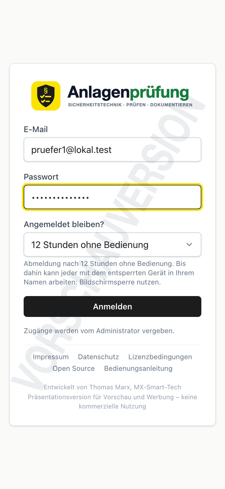
Hinweis zur Vorschauversion: Nach jeder Anmeldung zeigt die App einen Hinweis. Diese Version ist eine Präsentationsversion (Beta) für Vorschau und Werbung. Sie darf nicht kommerziell genutzt werden, und es dürfen keine realen Daten eingegeben werden, nur erfundene Testdaten. Setzen Sie den Haken und tippen Sie auf Bestätigen und fortfahren. Ohne Bestätigung lässt sich die App nicht nutzen.
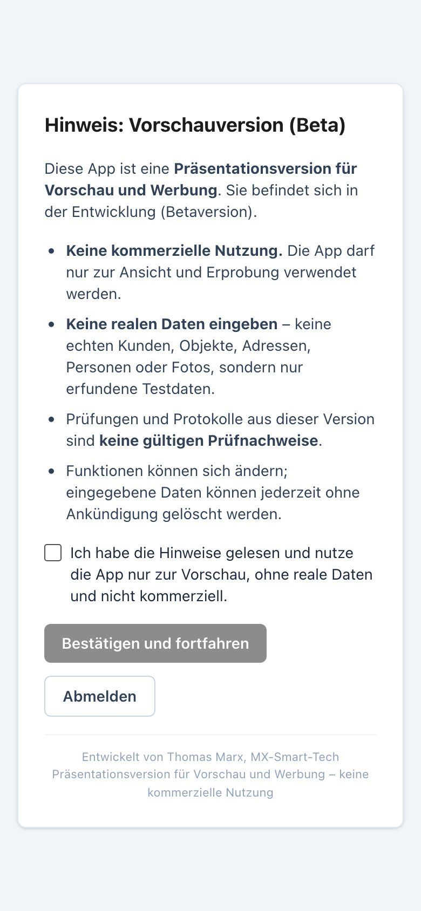
Demoversion: Steht unter dem Menü ein gelber Streifen DEMOMODUS, können Sie alles ansehen und ausprobieren, aber nichts dauerhaft ändern. Knöpfe zum Anlegen, Importieren und Löschen sind ausgegraut, Bearbeiten-Fenster zeigen die Daten nur an. Prüfungen können Sie durchspielen bis zum Abschluss; das Protokoll entsteht dann auf Ihrem Gerät über Protokoll erstellen (Demo) und trägt das Wasserzeichen „DEMO – kein Prüfnachweis“. Checklisten können Sie anlegen, bearbeiten, freigeben und duplizieren. Beides ist eine Simulation: Beim Speichern weist ein Fenster darauf hin, dass nichts gespeichert wurde, und nach dem Neuladen der Seite oder dem Abmelden ist alles wieder wie vorher. Nur der Admin pflegt die Daten der Demoversion.
Schlüsselblatt scannen
Ist die Verschlüsselung eingerichtet, fragt die App nach der Anmeldung auf jedem neuen Gerät einmal nach dem Schlüsselblatt (Schlüssel scannen). Bis dahin sehen Sie keine Kunden, Objekte, Fotos oder Protokolle. Das Blatt bekommen Sie vom Administrator.
- Tippen Sie auf Schlüsselblatt scannen und halten Sie den QR-Code des Blatts in den Rahmen.
- Ohne Kamera: Tippen Sie den Schlüssel vom Blatt ab (Gruppen zu je vier Zeichen, Groß- und Kleinschreibung sind egal) und wählen Sie Schlüssel übernehmen.
- Die App prüft, ob der Schlüssel zu dieser Instanz gehört. Ein Blatt einer anderen Instanz oder ein veraltetes Blatt wird abgelehnt.
Danach liest die App alles sofort, auch ohne Netz. Abmelden lässt den Schlüssel auf dem Gerät, auch die automatische Abmeldung nach 12 Stunden ohne Bedienung: Sie melden sich nur neu an. Geben Sie das Gerät ab, setzen Sie beim Abmelden das Häkchen Schlüssel von diesem Gerät löschen; bei der nächsten Anmeldung scannen Sie das Blatt dann erneut. Neu scannen müssen Sie auch, wenn ein Gerät 14 Tage ohne Verbindung zum Server war (die App warnt drei Tage vorher) und wenn der Administrator den Schlüssel getauscht hat.
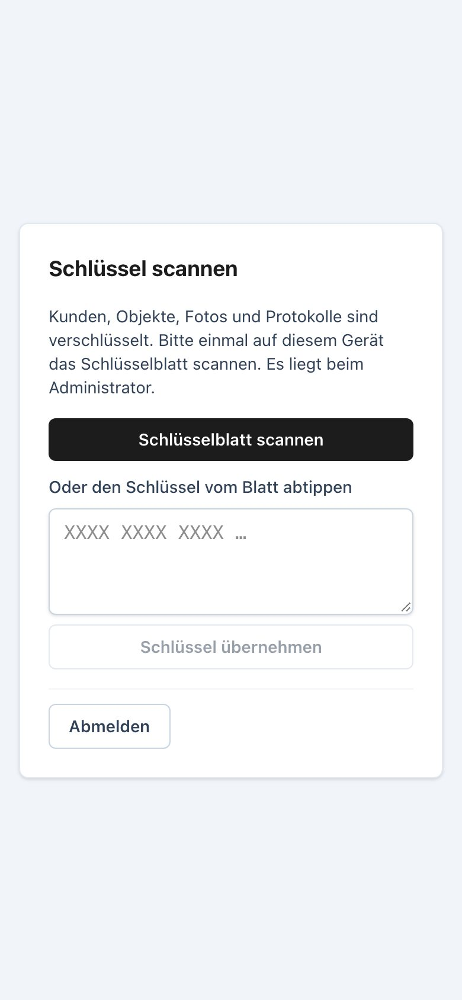
App auf dem Handy installieren
Die App ist eine Web-App. Sie brauchen keinen App-Store, sollten sie aber auf dem Startbildschirm installieren. Dann startet sie wie eine normale App im Vollbild und funktioniert auch offline zuverlässig.
Bebilderte Schritt-für-Schritt-Anleitung: App installieren (online) bzw. als PDF zum Ausdrucken, mit QR-Code zur App-Adresse.
| Gerät | So geht’s |
|---|---|
| iPhone / iPad (Safari) | App-Adresse in Safari öffnen → unten auf Teilen (Quadrat mit Pfeil) tippen → Zum Home-Bildschirm → Hinzufügen. |
| Android (Chrome) | App-Adresse in Chrome öffnen → Menü ⋮ oben rechts → App installieren bzw. Zum Startbildschirm hinzufügen. |
| PC / Laptop | Einfach im Browser (Chrome, Edge, Firefox, Safari) nutzen. Installieren ist optional. |
Beim ersten Scannen fragt das Handy, ob die App die Kamera benutzen darf. Bitte erlauben. Wenn Sie aus Versehen „Nicht erlauben“ gewählt haben, ändern Sie das in den Einstellungen des Handys bzw. des Browsers.
Neue Versionen lädt die App beim Start automatisch, solange Sie keine Anlage in Prüfung haben. Ist gerade eine Anlage offen oder läuft die App schon länger, erscheint stattdessen unten der Hinweis Eine neue Version der App ist verfügbar. Tippen Sie auf Jetzt aktualisieren, sobald es passt. Ihre Daten bleiben dabei erhalten. Mitten in einer Prüfung wird nie ungefragt neu geladen. Welche Version läuft, steht unten auf jeder Seite.
Aufbau der App
Oben sehen Sie immer:
- links die Sync-Anzeige. Sie zeigt, ob Ihre Eingaben beim Server angekommen sind (siehe Offline arbeiten).
- in der Mitte das Logo. Ein Tipp darauf bringt Sie zur Startseite.
- rechts das Menü ☰. Es zeigt alle Bereiche als Kacheln, nach Gruppen geordnet. Am PC steht das Menü als Leiste unter dem Logo. Punkte mit ▾ sind Gruppen: Ein Klick öffnet darunter ihre Kacheln mit einer kurzen Beschreibung.
Die Startseite zeigt den großen Knopf Prüfung starten / fortsetzen, die Suche Anlage finden mit QR-Scanner und die Anlagen, die in den nächsten 30 Tagen fällig sind. Rote Daten sind bereits überfällig. Admins und Planer sehen dort außerdem, wenn die Sachkunde eines Prüfers bald abläuft. Ist die Verschlüsselung noch nicht eingerichtet, weist die Startseite Admins darauf hin; mit dem × blenden Sie den Hinweis auf diesem Gerät aus.
Am PC (Fensterbreite ab 1280 Pixel) zeigt die Startseite stattdessen ein Dashboard: oben Kennzahlen (Anlagen, Geräte und Elemente, Prüfungen dieses Jahr, Anteil nicht betriebssicher, offene Mängel, Überfällige), darunter vier Bereiche:
- Anstehende Prüfungen: Kalender über drei Monate, zu Beginn der laufende und die zwei folgenden. Mit den Pfeilen ‹ und › blättern Sie einen Monat zurück oder weiter, Heute springt zurück zum laufenden Monat. Je kräftiger ein Tag gefärbt ist, desto mehr Anlagen sind fällig; rot heißt überfällig, ein blauer Punkt Melder-Austausch. Zeigen Sie mit der Maus auf einen Tag, erscheinen die Anlagen; ein Klick listet sie darunter mit Link.
- Laufende Prüfungen: je Objekt, wie viele Anlagen gerade in Prüfung und heute geprüft sind, sowie die zuletzt abgeschlossenen Prüfungen mit Protokollnummer.
- Statistik der letzten 12 Monate nach Ergebnis, Anlagen je Art und Anteil nicht betriebssicher je Art.
- Fristen und Hinweise: fällig in 30 Tagen, Sachkundenachweise (Prüfer sehen nur ihre eigenen), Melder-Austausch und erhebliche oder gefährliche Mängel.
Kacheln oder Liste: Listen zeigt die App als Kacheln – auf der Startseite (am Handy), unter Prüfen, Fälligkeiten, Mängel, Kunden, Objekte, Anlagen, Anlagentypen, Checklisten und Benutzer. Mit den zwei Knöpfen oben rechts an der Liste schalten Sie auf eine kompakte Liste bzw. Tabelle um. Die Wahl merkt sich das Gerät je Liste.
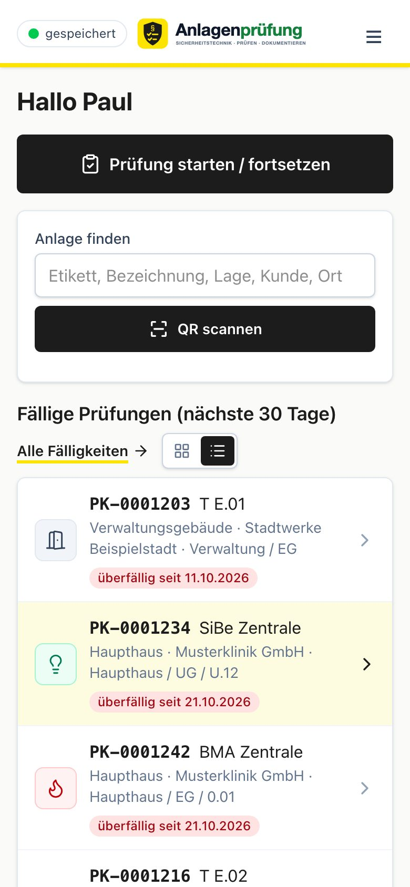
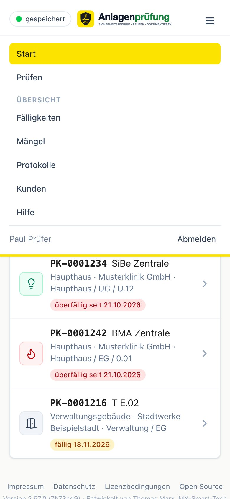
Die Menüpunkte
| Start | Startseite |
| Prüfen | Objekt wählen, Anlagen prüfen, laufende Prüfungen fortsetzen |
| Übersicht ▾ | Fälligkeiten (was ist wann fällig?), Mängel (offene Mängel über alle Kunden), Protokolle (alle gespeicherten Prüfprotokolle), Kunden (Kunden → Objekte → Anlagen, Prüfhistorie) |
| Verwaltung ▾ | nur Planer und Admins: Kundenliste, Objekte, Anlagen, Anlagentypen, Checklisten, Etiketten, Menü für Prüfer |
| System ▾ | nur Admins: Benutzer, Gesamtliste, Einstellungen, Datensicherung, Logdateien |
| Hilfe | diese Bedienungsanleitung |
Prüfer sehen nur Start, Prüfen, Übersicht und Hilfe. Admins und Planer können für Prüfer einzelne Bereiche ausblenden (siehe Menü für Prüfer). Bleibt in einer Gruppe nur ein Punkt übrig, steht er direkt in der Leiste.
3Prüfung vor Ort
Dieses Kapitel gilt für alle Anlagenarten. Wo sich eine Art unterscheidet, steht es dabei. Mehr zu den Besonderheiten finden Sie in Kapitel 7.
Ablauf im Überblick
Geprüft wird immer eine Anlage. Die Anlagen eines Objekts sind ein Vorrat an Prüfungen: Jeder prüft, was er will, und schließt jede Anlage für sich ab – ob eine oder zwanzig an einem Tag.
- Objekt wählen: Prüfen → Objekt suchen → Prüfen.
- Anlage öffnen: QR-Etikett scannen oder die Anlage in der Liste antippen. Hat der Typ mehrere Prüfarten, die richtige wählen.
- Checkliste ausfüllen: Jeden Punkt beantworten. Bei „n.i.O.“ legt die App automatisch einen Mangel an. Beschreibung und Foto ergänzen.
- Leuchten bzw. Melder abhaken, falls die Anlage welche hat und die Prüfart sie verlangt.
- Abschließen: Ergebnis prüfen, unterschreiben (optional auch der Kunde), Anlage abschließen. Das Protokoll entsteht automatisch.
- Nächste Anlage: Nächste Anlage scannen oder Zur Anlagenliste.
Objekt wählen und Anlage öffnen
Tippen Sie auf der Startseite auf Prüfung starten / fortsetzen oder im Menü auf Prüfen.
- Laufende Prüfungen auf diesem Gerät stehen oben, je Anlage – auch solche, bei denen Sie mitprüfen. Mit einem Tipp setzen Sie dort fort, wo Sie aufgehört haben.
- Unter Objekt wählen suchen Sie das Objekt nach Kunde, Objektname oder Ort und tippen auf Prüfen. Prüfen Kollegen dort gerade, steht es dabei („2 Anlagen in Prüfung · Anna, Ben“).
Auch über Fälligkeiten oder die Objektseite (Knopf Prüfen) kommen Sie zur Anlagenliste des Objekts.
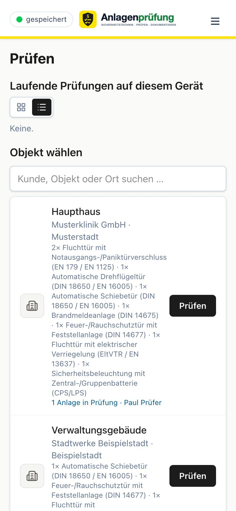
Die Anlagenliste
Die Anlagenliste des Objekts zeigt oben Kunde, Ort und Zugangshinweise (z. B. „Schlüssel an der Pforte“) und zählt, wie viele Anlagen gerade in Prüfung, heute geprüft und fällig sind. Darunter: Anlage scannen und Neue Anlage erfassen.
Jede Anlage zeigt ihren Stand:
| in Prüfung · Name | wird gerade geprüft (von Ihnen oder einem Kollegen), ggf. mit Mitprüfern |
| ✓ heute · ohne Mängel · Name | heute abgeschlossen, mit Ergebnis |
| überfällig fällig | Prüfung ist fällig bzw. überfällig; sonst steht die nächste Fälligkeit oder „noch nie geprüft“ dabei |
| doppelt geprüft | offline von zwei Prüfern gleichzeitig geprüft, in der Prüfung zu klären |
Mit Anlagen filtern … suchen Sie nach Nummer, Bezeichnung, Raum oder Lage; nur fällige blendet alles andere aus.
Ein Tipp auf eine Anlage beginnt ihre Prüfung (bzw. setzt Ihre laufende fort). Eine heute abgeschlossene Anlage öffnet sich zur Ansicht; Erneut prüfen beginnt dort eine neue Prüfung.
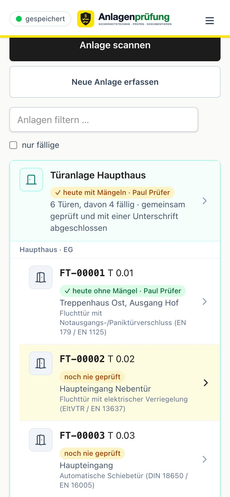
Anlage scannen und Prüfart wählen
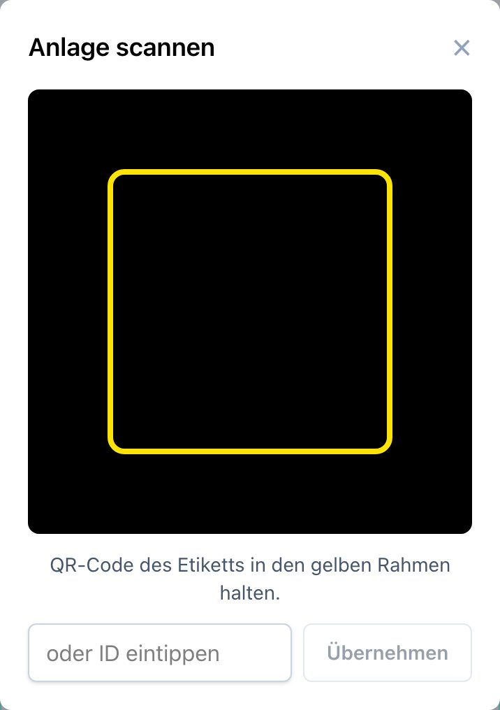
Tippen Sie auf Anlage scannen und halten Sie die Kamera auf den QR-Code am Etikett. Die App erkennt den Code von selbst und öffnet die Prüfung dieser Anlage.
- Lässt sich der Code nicht lesen, tippen Sie die Etikett-ID unter dem Kamerabild ein (oder ID eintippen → Übernehmen) oder tippen die Anlage einfach in der Liste an.
- Gehört das Etikett zu einem anderen Objekt, meldet die App: „Etikett … gehört zu keiner Anlage dieses Objekts.“
- Ist das Etikett neu und noch keiner Anlage zugeordnet, können Sie damit eine neue Anlage erfassen oder es einer vorhandenen Anlage ohne Etikett zuweisen (siehe Etikett bei der ersten Prüfung zuweisen).
- Prüft ein Kollege die Anlage gerade, sagt die App es Ihnen. Je Anlage läuft immer nur eine Prüfung. Erlaubt der Anlagentyp die Mehrpersonenprüfung, können Sie mitprüfen anfragen.
- Ist für diese Anlagenart Sachkunde Pflicht und haben Sie keine gültige, weist die App Sie ab (siehe Benutzer und Sachkunde).
Welche Prüfung?
Hat der Anlagentyp mehrere Prüfarten, fragt die App vor dem Öffnen, welche Sie durchführen, z. B. bei der Sicherheitsbeleuchtung „Monatliche Funktionsprüfung“ oder „Jährliche Prüfung“. Danach richten sich Checkliste, Fälligkeit und ob Leuchten bzw. Melder abzuhaken sind. Die gewählte Prüfart steht oben in der Prüfung und später im Protokoll.
Hat der Typ nur eine Prüfart, wie bei Türen üblich, entfällt die Frage.
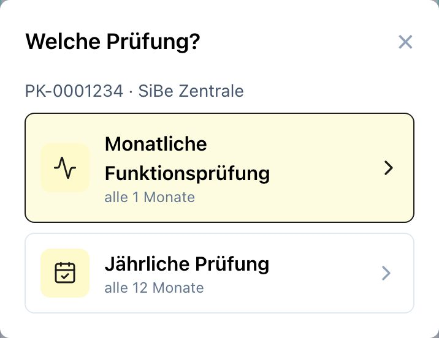
Neue Anlage vor Ort erfassen
Finden Sie eine Anlage, die noch nicht im System ist, kleben Sie ein leeres, vorgedrucktes Etikett auf und scannen Sie es. Alternativ tippen Sie auf Neue Anlage erfassen.
Pflicht ist nur der Anlagentyp. Füllen Sie möglichst auch Bezeichnung beim Kunden, Gebäude, Etage, Raum und Lagebeschreibung aus. Gebäude, Etage, Hersteller, Modell und z. B. Antrieb / System wählen Sie aus den Werten, die es im Objekt schon gibt (Hersteller, Modell und Antrieb von Anlagen derselben Art, Modelle des gewählten Herstellers); ein neuer Wert kommt über „+ Neues Gebäude …“, „+ Neuer Hersteller …“ usw. ins Textfeld, Liste führt zurück zur Auswahl. Je nach Art kommen weitere Felder dazu, z. B. Antrieb / System bei Türen oder Systemart und Nennbetriebsdauer bei der Sicherheitsbeleuchtung. Sie erscheinen später im Protokoll.
Mit Anlegen und prüfen wird die Anlage angelegt und die Prüfung startet sofort. Das klappt auch offline.
Haben Sie gerade kein Etikett zur Hand, lassen Sie die Etikett-ID leer. Das Etikett weisen Sie später zu, wie im nächsten Abschnitt beschrieben.
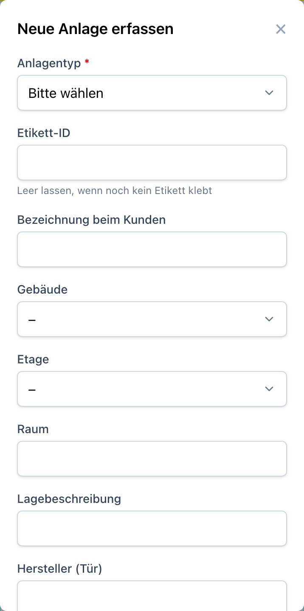
Etikett bei der ersten Prüfung zuweisen
Anlagen aus einer importierten Liste oder im Büro angelegte Anlagen haben oft noch kein Etikett. In der Anlagenliste steht dann „ohne Etikett“. Kleben Sie bei der ersten Prüfung ein freies, vorgedrucktes Etikett auf und weisen Sie es der Anlage zu. Beide Wege funktionieren auch offline.
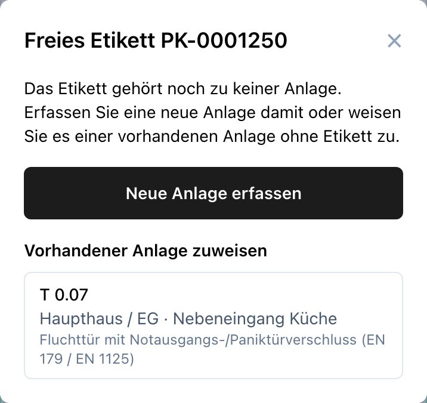
Weg 1: Etikett scannen
Scannen Sie das frisch aufgeklebte Etikett mit Anlage scannen. Gibt es im Objekt Anlagen ohne Etikett, fragt die App, was Sie tun möchten:
- Neue Anlage erfassen: Die Anlage ist noch nicht im System (siehe oben).
- Vorhandener Anlage zuweisen: Tippen Sie die Anlage in der Liste an. Die App weist das Etikett zu und öffnet gleich ihre Prüfung. Bei vielen Anlagen hilft das Suchfeld über der Liste.
Weg 2: in der Anlage
Öffnen Sie die Anlage in der Anlagenliste. Oben steht „Diese Anlage hat noch kein Etikett.“ Tippen Sie auf Etikett zuweisen, scannen Sie das aufgeklebte Etikett (oder tippen Sie die ID ein) und bestätigen Sie mit Zuweisen.
Ab dann zeigt die Prüfung oben die Etikett-ID, und bei der nächsten Prüfung genügt der Scan.
Im Büro geht es auch ohne Prüfung: Kunden → Objekt → Anlage antippen → Etikett-ID eintragen → Speichern. Dafür braucht es Internet.
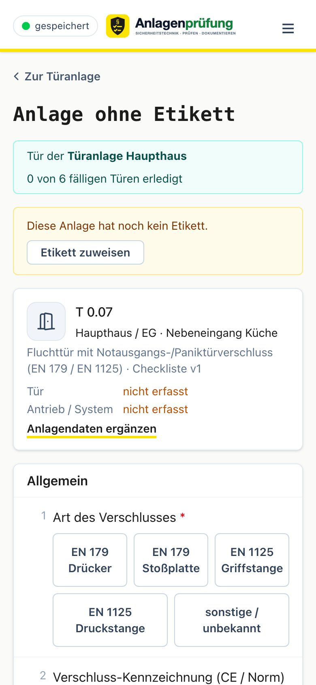
Anlagendaten prüfen und ergänzen
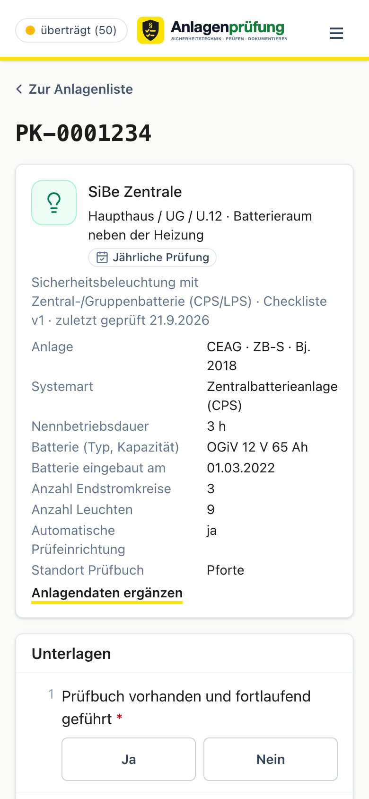
Oben in jeder Prüfung stehen die Anlagendaten: Bezeichnung, Lage, Typ, Prüfart, Checklisten-Version und letzte Prüfung. Darunter folgen Hersteller, Modell, Baujahr und die Felder der jeweiligen Anlagenart.
Was noch fehlt, steht dort als „nicht erfasst“. Tippen Sie auf Anlagendaten ergänzen und tragen Sie es vor Ort nach, auch offline. Die Angaben gelten danach für die Anlage und erscheinen im Protokoll.
Checkliste ausfüllen
Unter den Anlagendaten folgt die Checkliste der gewählten Prüfart, gegliedert in Abschnitte. Punkte mit rotem * sind Pflicht. Grau darunter stehen Hinweise und Normbezüge.
Je nach Punkt gibt es diese Antworten:
| i.O. n.i.O. entfällt | in Ordnung / nicht in Ordnung / trifft bei dieser Anlage nicht zu |
| Ja Nein | Die „schlechte“ Antwort wird rot und erzeugt einen Mangel. |
| Auswahl | eine von mehreren Möglichkeiten, z. B. Art des Verschlusses |
| Messwert | Zahl mit Einheit und Soll-Bereich, z. B. Kraft in N oder erreichte Betriebsdauer in min |
| Freitext | Bemerkungen |
| 📷 Foto | z. B. Übersichtsfoto der Anlage |
Manche Punkte erscheinen erst nach einer bestimmten Antwort. Die Kraftmessung am Drücker kommt zum Beispiel nur, wenn als Verschluss „EN 179 Drücker“ gewählt ist, der Probealarm zur Leitstelle nur bei einer aufgeschalteten Brandmeldeanlage.
Jede Eingabe wird sofort gespeichert, es gibt keinen Speichern-Knopf. Sie können eine Anlage jederzeit verlassen und später weitermachen.
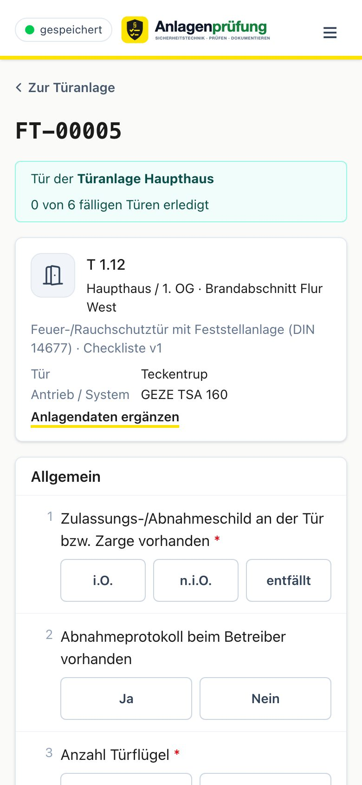
Leuchten, Melder und Komponenten abhaken
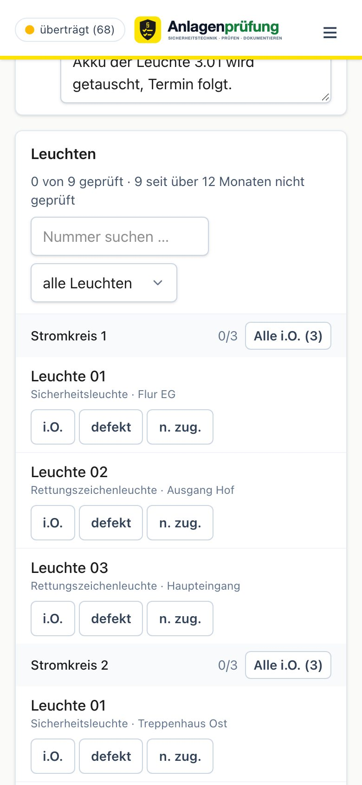
Hat die Anlage Leuchten (Sicherheitsbeleuchtung), Melder (Brandmelde- und Alarmanlagen) oder Komponenten (RWA) und verlangt die Prüfart ihre Prüfung, folgt nach der Checkliste ein eigener Abschnitt. Die Elemente sind nach Stromkreis, Meldergruppe bzw. Rauchabschnitt sortiert.
- Oben steht der Stand, z. B. „0 von 9 geprüft“. Bei Teilprüfungen steht dabei, wie viele heute vorgeschlagen sind und wie viele seit über 12 Monaten nicht geprüft wurden.
- Nummer suchen findet ein Element schnell, z. B. beim Gang durchs Gebäude.
- Die Auswahl darunter zeigt Vorschlag für heute (nur bei Teilprüfungen), alle oder ohne Ergebnis.
- Alle i.O. (3) erledigt einen ganzen Stromkreis bzw. eine Meldergruppe auf einmal. Schon bewertete Elemente bleiben, wie sie sind.
Je Element tippen Sie:
| i.O. | geprüft, in Ordnung |
| defekt | öffnet ein Fenster mit Grund (z. B. „Leuchtmittel defekt“, „löst nicht aus“), Mangelstufe und Bemerkung. Der Defekt wird automatisch als Mangel erfasst und bestimmt so das Ergebnis. |
| n. zug. | nicht zugänglich, z. B. verschlossener Raum. Zählt nicht als geprüft. |
Ein zweiter Tipp auf den gewählten Knopf nimmt das Ergebnis zurück. Fotos zu einem Defekt ergänzen Sie unten unter Weitere Mängel. Den Mangel selbst entfernen Sie, indem Sie das Element wieder auf i.O. setzen.
Fehlt ein Element in der Liste, erfassen Sie es mit + Leuchte erfassen bzw. + Melder erfassen, auch offline.
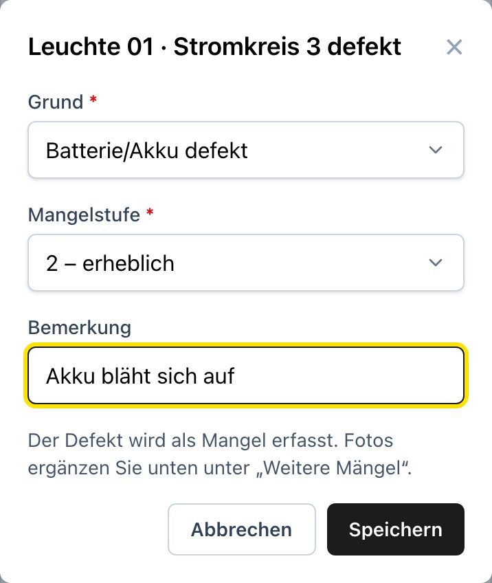
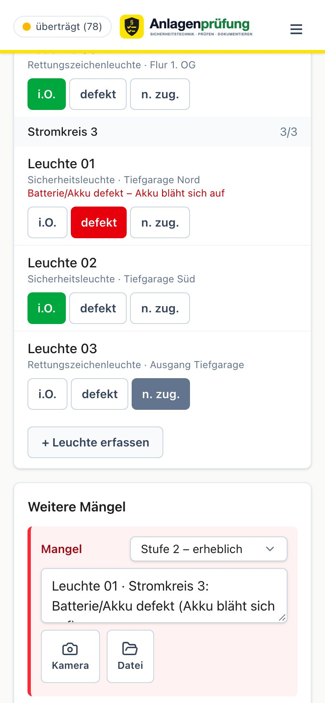
Melder scannen und zuordnen
Bei Rauchwarnmeldern trägt jedes Gerät einen QR-Aufkleber (bei Ei Electronics seitlich am Melder, neben dem Austauschdatum). Über der Melderliste steht der Knopf Melder scannen. Er öffnet die Kamera. Halten Sie das Handy ruhig und nah an den kleinen Code, etwa eine Handbreit, bis er im gelben Rahmen scharf ist. Statt zu scannen können Sie den Code auch unter dem Kamerabild eintippen.
Bei der Wartung: Melder finden und abhaken
- Ist der Code bekannt, erscheint oben eine gelbe Karte Gescannt mit Melder, Wohnung, Raum, Code und Austauschdatum. Dort tippen Sie direkt i.O., defekt oder n. zug.. Nächsten scannen öffnet die Kamera erneut. Der Scan setzt kein Ergebnis von selbst, denn der Testalarm muss ja erst stattgefunden haben.
- Ein Melder ohne Code ist in der Liste mit „noch ohne Code“ markiert. Sein Code wird beim ersten Scan zugewiesen (siehe unten).
- Gehört der Code zu einem Melder in einer anderen Anlage, meldet die App das mit Wohnung und Melder. Es wird nichts geändert.
- Scannen Sie das Etikett einer Anlage statt eines Melders, weist die App darauf hin. Die Anlage selbst scannen Sie wie gewohnt auf der Startseite oder in der Anlagenliste.
Bei der Erstinstallation und bei neuen Meldern: Code zuweisen
Kennt die App den Code noch nicht, öffnet sich das Fenster Neuer Code. Es zeigt den Code, bei Ei-Meldern auch Modell und Seriennummer (die App liest sie aus dem Code). Sie haben zwei Wege:
- Vorhandenem Melder zuweisen: Die Liste zeigt die Melder dieser Anlage ohne Code, etwa aus einem Import. Melder antippen, dann Code … zuweisen.
- Neuer Melder: Die Wohnung / Bereich ist mit der des zuletzt erfassten Melders vorbelegt; eine andere wählen Sie aus der Liste oder legen sie mit + Wohnung / Bereich anlegen … an, die Nummer mit der nächsten nach der höchsten. Eine Lücke füllt Erste freie Nr. Ergänzen Sie den Raum und die Art. Das Austauschdatum tragen Sie vom Aufkleber ab (siehe unten), die Seriennummer ist schon eingetragen. Melder anlegen speichert, und der neue Melder erscheint gleich in der gelben Karte, bereit zum Abhaken.
So scannen Sie bei der Erstinstallation Melder für Melder durch die Wohnung. Alles geht auch offline. Hat die App den Code schon einem Melder zugewiesen, kann er kein zweites Mal vergeben werden.
Das Austauschdatum eintragen
Auf dem Aufkleber steht unter einer Sanduhr der Monat, bis zu dem der Melder getauscht werden muss, z. B. 06-2037. Er steht nicht im QR-Code, Sie tippen ihn von Hand ein: im Feld Austauschdatum als Monat und Jahr (06-2037 oder 2037-06). Die App speichert den Monatsletzten, hier den 30.06.2037. Zeigt das Handy ein Monatsfeld, wählen Sie Monat und Jahr dort aus.
Mehrere Melder hintereinander scannen (Dauerscan)
Mit Dauerscan neben Melder scannen prüfen Sie viele Melder nacheinander, ohne den Scanner jedes Mal neu zu öffnen. Sie halten das Handy vor einen Melder; die App liest den Code, vibriert kurz, hält die Kamera an und zeigt den Melder mit den Knöpfen i.O., defekt und n. zug.. Sobald Sie das Ergebnis angetippt haben (bei defekt nach dem Speichern des Grundes), geht die Kamera für den nächsten Melder wieder an. Mit Weiter (nächsten scannen) überspringen Sie einen Melder ohne Ergebnis. Jeder gescannte Melder bleibt in der Liste unter dem Kamerabild stehen.
- Schon geprüfte Melder: Scannen Sie einen Melder, der heute schon ein Ergebnis hat, steht „Heute schon geprüft: …“ dabei. Sie können das Ergebnis ändern oder einfach weitergehen; ein erneutes Antippen desselben Ergebnisses löscht es im Dauerscan nicht.
- Gleich als i.O. setzen: Ist das Kästchen Gescannte Melder gleich als i.O. setzen (ohne Halt) angekreuzt, trägt die App beim Scannen sofort „i.O.“ ein und die Kamera läuft ohne Halt weiter. Kreuzen Sie es nur an, wenn Sie den Testalarm bei jedem Melder schon ausgelöst haben.
- Unbekannte Codes sofort anlegen (Erstinstallation): Das Kästchen Unbekannte Codes sofort als neue Melder anlegen ist vorangekreuzt, solange noch kein Melder der Anlage einen Code hat. Wählen Sie die Wohnung / Bereich aus oder legen Sie sie mit + Wohnung / Bereich anlegen … an. Jeder neue Code legt einen Melder mit der nächsten Nummer an, mit Modell und Seriennummer aus dem Code. Unter Vorgaben ändern … legen Sie fest, was alle neuen Melder bekommen: Art, Ort, Typ (falls der Code keinen enthält), Einbaudatum (zu Beginn heute), Austauschdatum und Funkvernetzung. Den Raum tippen Sie gleich beim Halt ein. Ohne Vorgabe ergänzen Sie das Austauschdatum danach in der Melderliste (die App weist darauf hin).
- Ohne dieses Kästchen hält die Kamera bei einem unbekannten Code an und bietet Zuordnen … an. Der Knopf schließt den Dauerscan und öffnet das Fenster Neuer Code wie oben beschrieben; Weiter scannt ohne Zuordnung weiter.
- Codes aus einer anderen Anlage und Etiketten von Anlagen erscheinen als gelber Hinweis, ohne etwas zu ändern; mit Weiter geht es zum nächsten Melder.
Die Kamera schließt sich erst, wenn Sie das Fenster schließen. Was Sie angelegt oder abgehakt haben, ist sofort gespeichert, auch offline.
Ei650i-26W25-019DDBD8), nutzen Sie ihn. Dann ist nichts zu drucken. Prüfen Sie vorher bei zwei Geräten, dass die Codes verschieden sind. Trägt ein Gerät keinen brauchbaren Code oder ist er zu klein zum Scannen, kleben Sie ein eigenes Melder-Etikett daneben.
Mängel und Fotos
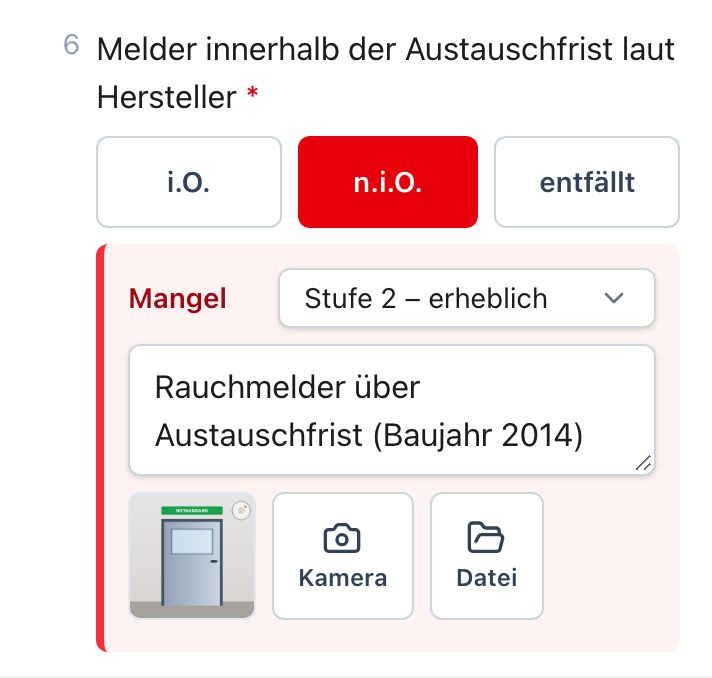
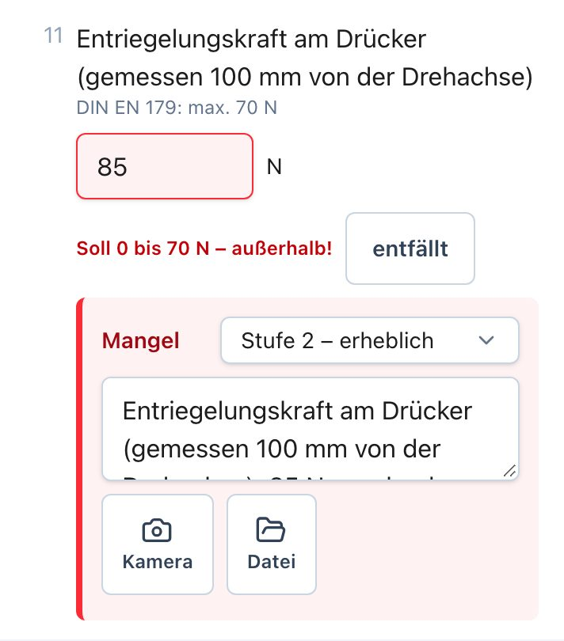
Antworten Sie mit n.i.O., mit der „schlechten“ Ja/Nein-Antwort, liegt ein Messwert außerhalb des Soll-Bereichs (rot: „außerhalb!“) oder ist ein Element defekt, legt die App automatisch einen Mangel an:
- Stufe: Die Checkliste schlägt sie vor. Passen Sie sie bei Bedarf an (1 geringfügig, 2 erheblich, 3 gefährlich).
- Beschreibung: Die App trägt einen Vorschlag ein, der den Mangel benennt, z. B. „Tür schließt selbsttätig: nicht in Ordnung“ oder „Schließkraft: 180 N – zu hoch (Soll ≤ 150 N)“. Ergänzen Sie kurz und genau, was mangelhaft ist. Die Beschreibung ist Pflicht und steht so im Protokoll. Ändern Sie den Messwert, zieht der Vorschlag mit, solange Sie ihn nicht selbst geändert haben. Bei Elementen trägt die App Nummer und Grund schon ein.
- Foto: Kamera öffnet am Handy und Tablet die Kamera des Geräts; am PC zeigt die App das Bild der Webcam, jedes Auslösen fügt ein Foto hinzu. Datei wählt vorhandene Fotos aus, auch mehrere auf einmal. Steht „Foto erforderlich“ dabei, lässt sich die Anlage ohne Foto nicht abschließen. Tippen Sie auf ein Vorschaubild, um es groß zu sehen oder zu löschen.
Korrigieren Sie die Antwort auf i.O., verschwindet der Mangel wieder. Hat er schon Fotos, fragt die App vorher nach. Mängel, die zu keinem Prüfpunkt passen, erfassen Sie unten bei Weitere Mängel mit + Mangel erfassen.
Mängel aus früheren Prüfungen
Hatte die Anlage bei der letzten Prüfung offene Mängel, stehen diese oben unter Offene Mängel aus früheren Prüfungen, mit Datum und Fotos. Bewerten Sie jeden davon:
- besteht weiter: Der Mangel zählt auch für das heutige Ergebnis.
- behoben ✓: Der Mangel ist beseitigt und gilt nach dem Abschluss als erledigt („nachgeprüft“).
Die Anlage lässt sich erst abschließen, wenn alle früheren Mängel bewertet sind.
Ergebnis und Anlage abschließen
Am Ende der Seite steht der Abschnitt Ergebnis und Abschluss. Die App berechnet das Ergebnis aus allen Mängeln, auch denen aus defekten Leuchten oder Meldern:
| ohne Mängel | kein Mangel |
| mit Mängeln, betriebsbereit | nur Mängel der Stufe 1 oder 2 |
| nicht betriebssicher | mindestens ein Mangel der Stufe 3 |
Sie können das Ergebnis nur verschärfen, nie verbessern. Dann ist eine Begründung Pflicht.
Darunter unterschreiben Sie mit dem Finger – jede Prüfung einzeln, die App merkt sich keine Unterschrift. Das Unterschriftsbild bleibt nur so lange gespeichert, bis das PDF-Protokoll erstellt ist; danach steht es ausschließlich im Protokoll. Soll der Kunde unterschreiben, setzen Sie den Haken Kunde unterschreibt, tragen seinen Namen ein und lassen ihn unterschreiben.
Fehlt noch etwas, listet die App es in einem gelben Kasten unter dem Knopf auf („Noch nicht möglich, weil:“), z. B. „Pflichtangabe fehlt“, „Foto zum Mangel fehlt“, „3 Leuchten ohne Ergebnis“ oder „Ben hat noch nicht fertig gemeldet“. Erst wenn alles vollständig ist, wird Anlage abschließen aktiv.
Vor dem Abschluss fragt die App nach. Die App macht nur unverbindliche Vorschläge (Grenzwerte, Mangelstufen, vorgeschlagenes Ergebnis); verantwortlich für die Prüfung und ihre Bewertung bleibt, wer unterschreibt. Mit einem Pflicht-Häkchen bestätigen Sie, dass Sie alle Eingaben und Messwerte kontrolliert und die Bewertung als sachkundige bzw. befähigte Person selbst geprüft und entschieden haben. Kontrollieren Sie nach dem Abschluss das Protokoll (PDF). Falsche Angaben korrigieren Sie mit Wieder öffnen und neuer Unterschrift.
Der Abschluss geht auch offline. Endgültig ist er, sobald der Server ihn bestätigt: Er vergibt dann die Protokollnummer und sperrt die Prüfung. Lehnt der Server ihn ab (z. B. weil die Fertigmeldung eines Mitprüfers noch fehlt), läuft die Prüfung weiter, und der Grund steht oben in der Prüfung.
Prüfung abbrechen verwirft alle Eingaben zu dieser Anlage und gibt sie für Kollegen wieder frei.
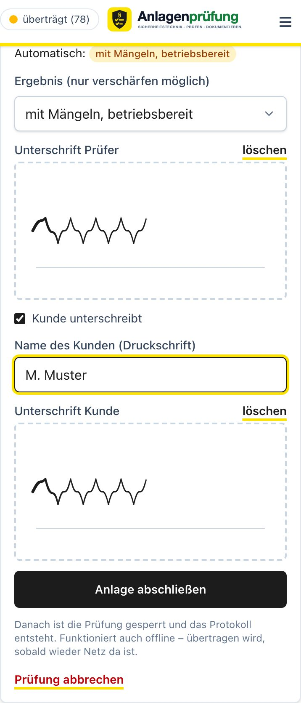
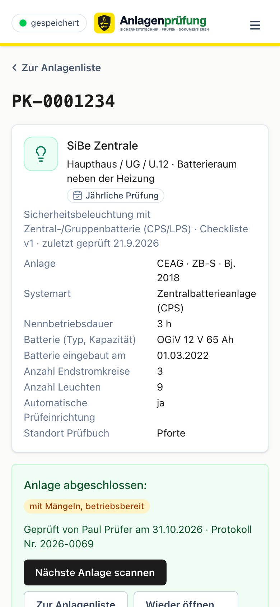
Nach dem Abschluss zeigt die Anlage einen grünen Balken mit Ergebnis und Protokollnummer. Mit Nächste Anlage scannen öffnet sich sofort wieder der Scanner, Zur Anlagenliste führt zur Übersicht.
Sobald das Protokoll erstellt ist (ein paar Sekunden nach der Übertragung), erscheint Protokoll öffnen.
Haben Sie sich vertan, tippen Sie auf Wieder öffnen … (siehe Wieder öffnen und korrigieren).
Türanlage: alle Türen, eine Unterschrift
Alle Türen eines Objekts gehören automatisch zu seiner Türanlage, z. B. „Türanlage Haupthaus“. Sie prüfen die Türen gemeinsam und schließen sie mit einer Unterschrift und einem Protokoll ab. Einrichten müssen Sie dafür nichts. Jede Tür behält ihr Etikett, ihre Checkliste, ihre Mängel und ihre Fälligkeit.
In der Anlagenliste steht die Türanlage als Gruppe mit allen Türen, nach Gebäude und Etage sortiert. Rauchwarnmelder und ortsveränderliche Geräte haben keine eigene Lage. Haben ihre Wohnungen bzw. Räume ein Gebäude (siehe „Wohnungen / Bereiche“ in der Verwaltung), erscheinen sie bei jedem dieser Gebäude, z. B. „Rauchwarnmelder · 11 Melder in 3 Wohnungen / Bereichen“ unter „Haus A“. Antippen öffnet die eine gemeinsame Prüfung und zeigt zuerst die Melder dieses Gebäudes; über die Auswahl alle Gebäude sehen Sie alle. Es bleibt eine Prüfung mit einer Unterschrift und einem Protokoll. Ohne Gebäude stehen sie oben unter Ganzes Objekt. Oben sehen Sie, wer sie gerade prüft und wie viele der fälligen Türen schon erledigt sind.
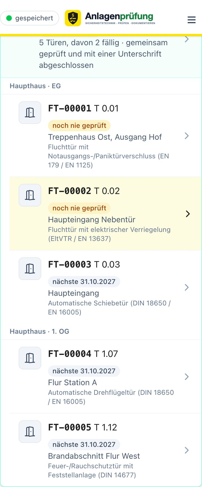
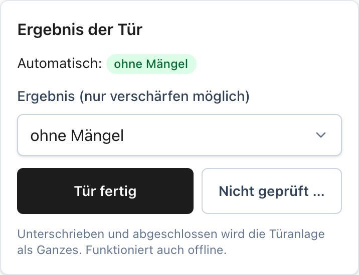
- Tür scannen oder antippen. Die App beginnt dabei die Prüfung der Türanlage, falls das noch niemand getan hat, und öffnet die Tür. Oben steht die Türanlage und wie viele der fälligen Türen erledigt sind.
- Checkliste, Mängel und Fotos erfassen Sie wie bei jeder Tür.
- Unten steht statt der Unterschrift das Ergebnis der Tür (nur verschärfen, mit Begründung) und Tür fertig. Bis die Türanlage abgeschlossen ist, öffnen Sie die Tür mit Weiter bearbeiten wieder.
- Ist eine Tür nicht zugänglich, tippen Sie auf Nicht geprüft … und geben den Grund an. Sie bleibt fällig und steht mit dem Grund im Protokoll.
- Weiter mit Nächste Tür scannen oder Zur Türanlage.
Auf der Seite der Türanlage stehen oben die fälligen Türen mit ihrem Stand, darunter aufklappbar die nicht fälligen. Fällig ist eine Tür, die noch nie geprüft wurde oder deren nächste Prüfung höchstens 30 Tage nach dem Beginn der Prüfung liegt. Von hier öffnen Sie jede Tür, markieren nicht zugängliche als nicht geprüft und schließen ab:
- Nicht fällige Türen können Sie mitprüfen, müssen es aber nicht.
- Übrige nicht geprüft … markiert alle noch offenen fälligen Türen auf einmal mit demselben Grund.
- Das Gesamtergebnis ist das schlechteste Ergebnis der geprüften Türen. Sie können es mit Begründung verschärfen, nie verbessern.
- Türanlage abschließen wird aktiv, wenn jede fällige Tür fertig oder als nicht geprüft markiert ist, mindestens eine Tür geprüft ist und alle Mitprüfer fertig gemeldet haben. Was noch fehlt, steht im gelben Kasten.
- Sie unterschreiben einmal für alle Türen, auf Wunsch auch der Kunde.
Mitprüfen, Wieder öffnen und Abbrechen funktionieren wie bei einer Anlage, nur für die Türanlage als Ganzes. Wird eine Tür nach dem Unterschreiben noch geändert, erlischt die Unterschrift der Türanlage. Unter Laufende Prüfungen steht die Türanlage mit ihrem Fortschritt, nicht jede Tür einzeln. Alles geht auch offline.
Das Protokoll der Türanlage hat eine Nummer für alle geprüften und nicht geprüften Türen: vorne Kunde, Objekt, Gesamtergebnis, Übersicht der Türen, nicht geprüfte Türen mit Grund, Mängelliste und Unterschriften, danach je Tür ihr Prüfabschnitt. Zusätzlich bekommt jede geprüfte Tür ein Tür-Protokoll für die Türakte, ohne eigene Nummer, mit Verweis auf das Protokoll der Türanlage. Jeder Türabschnitt nennt, wer die Tür geprüft hat, und trägt deren Unterschriften (Geprüft von). Haben zwei Prüfer an einer Tür etwas erfasst, stehen beide da.
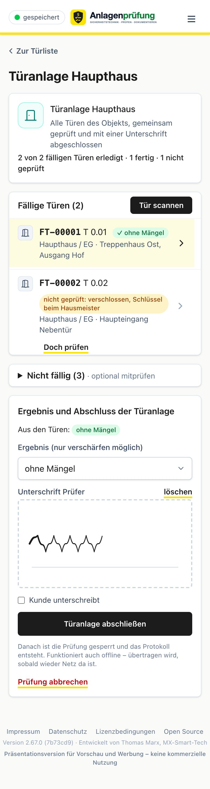
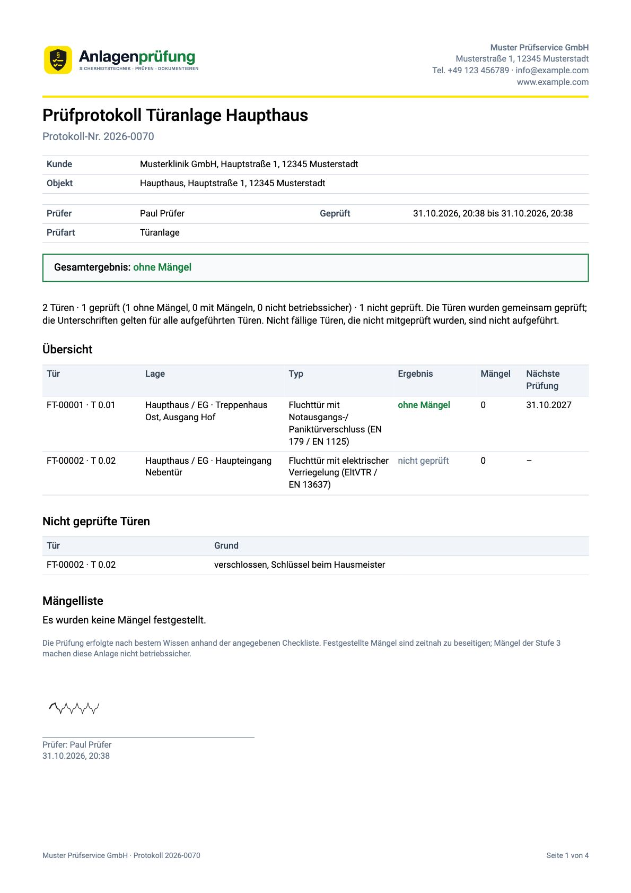
Mit mehreren Prüfern arbeiten
Große Objekte prüfen Sie gemeinsam, ohne etwas zu verabreden: Jeder öffnet dasselbe Objekt und prüft, was er will. In der Anlagenliste sehen alle live, wer welche Anlage gerade prüft oder heute schon fertig hat. So kann ein Kollege die Türen prüfen, während ein anderer die Sicherheitsbeleuchtung übernimmt.
Jede Anlage prüft immer nur einer. Öffnet ein Kollege eine Anlage, die Sie gerade prüfen, sagt die App ihm, dass Sie dran sind.
Doppelt geprüft: Haben zwei Prüfer offline dieselbe Anlage gleichzeitig geprüft, merkt die App das beim Übertragen. Die beiden oder ein Admin wählen in der Prüfung, welche gilt.
Liegengeblieben: Hat ein Kollege eine Anlage angefangen und ist nicht erreichbar, kann ein Admin oder Planer sie in der Prüfung mit Freigeben … wieder frei machen. Die Eingaben des Kollegen zu dieser Anlage werden verworfen, auch die noch auf seinem Handy; er sieht beim nächsten Abgleich einen Hinweis.
Gemeinsam eine Anlage prüfen
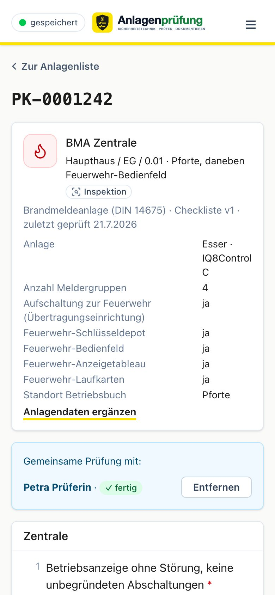
Große Anlagen (z. B. eine Brandmeldeanlage mit vielen Meldern) können mehrere Prüfer zusammen prüfen, wenn der Admin beim Anlagentyp die Mehrpersonenprüfung eingeschaltet hat.
- Der Kollege öffnet die Anlage, die Sie gerade prüfen, und tippt auf Mitprüfen anfragen.
- Bei Ihnen erscheint „Mitprüfen?“: Zulassen, Ablehnen oder Später. (Anfragen und Zulassen gehen nur online.)
- Danach erfassen beide Antworten, Leuchten bzw. Melder, Mängel und Fotos in derselben Prüfung. Dieselbe Antwort von beiden: die spätere gilt.
- Ist der Kollege fertig, tippt er auf Meinen Teil fertig melden … und unterschreibt. Dabei ist ein Häkchen Pflicht: eigene Eingaben und Messwerte kontrolliert und selbst bewertet. Sie sehen oben den Stand, z. B. „Anna ✓ fertig · Ben arbeitet noch“.
- Ergebnis und Abschluss bleiben bei Ihnen. Abschließen können Sie erst, wenn alle Mitprüfer fertig gemeldet haben. Ist einer nicht mehr erreichbar, entfernen Sie ihn; er steht dann im Protokoll als „ebenfalls beteiligt, ohne Unterschrift“.
Das Protokoll nennt alle Mitprüfer und trägt ihre Unterschriften.
Wieder öffnen und korrigieren
Eine abgeschlossene Prüfung öffnen Sie mit Wieder öffnen … und einem Grund wieder. Am Tag des Abschlusses darf das der Prüfer selbst, danach nur ein Admin oder Planer. Der Admin kann dabei unter Korrektur durch einen anderen Prüfer einsetzen; der bisherige bleibt dann als Mitprüfer beteiligt und meldet seinen Teil neu fertig.
Es entsteht eine neue Revision mit derselben Protokollnummer und demselben Prüfdatum. Oben in der Prüfung stehen der Grund, der Stand jeder Unterschrift und die bisherigen Änderungen.
- Mit dem Wiederöffnen erlöschen alle Unterschriften: Mitprüfer melden ihren Teil neu fertig, Prüfer und Kunde unterschreiben beim Abschluss neu. Jede Revision wird einzeln unterschrieben.
- Innerhalb der Revision gilt: Wird ein Eintrag geändert, erlischt die Unterschrift dessen, von dem er stammt, und die des Ändernden. Wer ändert, unterschreibt neu.
- Ein anderes Ergebnis oder eine andere Bewertung früherer Mängel lässt die Unterschrift des Hauptprüfers erlöschen. Die Kundenunterschrift erlischt bei jeder Änderung.
Danach schließen Sie wie gewohnt ab. Das neue Protokoll nennt den Grund und listet alle Änderungen dieser Revision (vorher → nachher, wer, wann). Das bisherige bleibt als „ersetzt“ abrufbar.
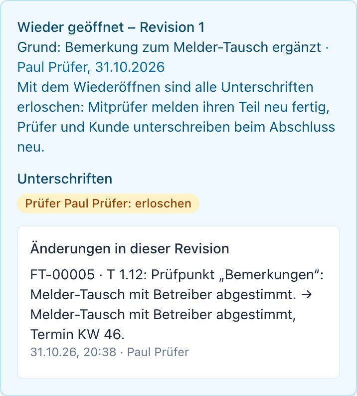
Prüfprotokolle (PDF)
Jede abgeschlossene Prüfung bekommt ein eigenes Protokoll mit eigener Protokollnummer im Format JJJJ-NNNN, z. B. 2026-0006. Es entsteht automatisch, sobald der Abschluss übertragen ist:
- Kunde, Anlagendaten, Prüfart, alle Prüfpunkte mit Nummer, Messwerte und Mängel. Der Titel nennt die Art, z. B. „Prüfprotokoll Tür …“ oder „Prüfprotokoll Sicherheitsbeleuchtung …“.
- Alle Fotos stehen nummeriert in der Fotoanlage am Ende. Jedes Foto nennt seinen Prüfpunkt bzw. Mangel („Foto 3 – Prüfpunkt 7: Statische Schließkraft · Mangel Stufe 3: …“), und Prüfpunkte und Mängel verweisen auf ihre Fotos („siehe Foto 3“).
- Hat die Anlage Leuchten oder Melder, enthält es die Liste der geprüften Elemente mit Ergebnis. Bei Teilprüfungen steht dabei, wie viele Elemente insgesamt in den letzten 12 Monaten geprüft wurden.
- Hat die Anlage ein Etikett, stehen im Kopf QR-Code und Nummer der Anlage. Bei Rauchwarnmeldern zeigt die Melderliste je Melder QR-Code und Code. Das Papier lässt sich mit der Handykamera scannen und öffnet die Anlage bzw. den Melder in der App. Der kleine Melder-QR ist nur etwa 1,3 cm groß: Scannen Sie ihn aus der Nähe und ausgedruckt, nicht vom Bildschirm.
- Unterschriften von Prüfer, Mitprüfern und – falls gewünscht – Kunde; neben den Prüfern ihre Sachkunde für die Anlagenart.
- Bei einer Revision zusätzlich alle Gründe und die Liste der Änderungen.
Sie finden die Protokolle auf der Prüfseite (Protokoll öffnen), im Verlauf einer Anlage, auf der Objektseite unter Prüfungen und Protokolle und beim Kunden unter Letzte Protokolle. Ein Tipp öffnet die Protokollseite der Prüfung mit allen Fassungen und PDF öffnen.
Alle Protokolle auf einen Blick finden Sie unter Übersicht → Protokolle: je Protokoll Nummer, Prüfdatum, Objekt bzw. Anlage, Ergebnis und die Prüfer, die unterschrieben haben. Die Suche findet Nummer, Kunde, Objekt, Anlage und Prüfer. PDF öffnet das Protokoll in einem neuen Fenster, ein Tipp auf die Nummer die Protokollseite der Prüfung. Nach dem Wiederöffnen bleibt das frühere Protokoll in der Liste und ist als ersetzt markiert.
Wer sieht welche Protokolle? Admins und Planer sehen alle. Prüfer sehen in dieser Liste nur die Protokolle, die sie selbst unterschrieben haben, allein oder als Mitprüfer. Das legt der Server beim Speichern des Protokolls fest; spätere Änderungen an der Prüfung ändern es nicht.
Die PDFs sind unveränderlich gespeichert; die Prüfsumme (SHA-256) belegt das. Protokolle aus der Zeit vor Version 2.41 (Sammelprotokoll je Termin) bleiben unverändert abrufbar.
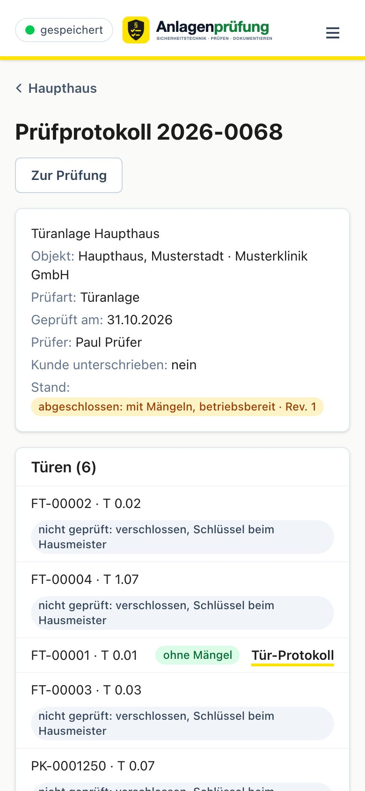
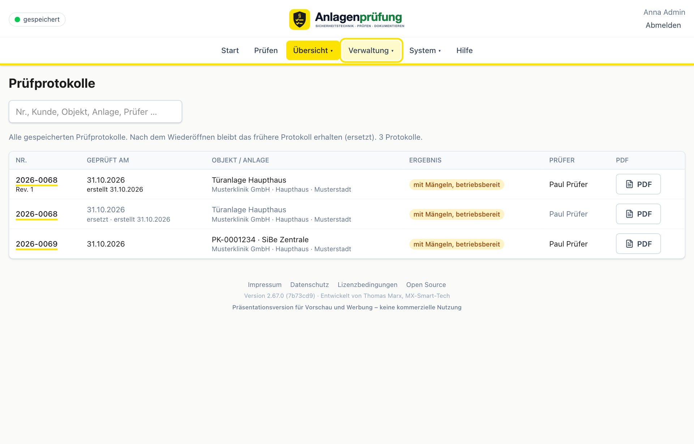
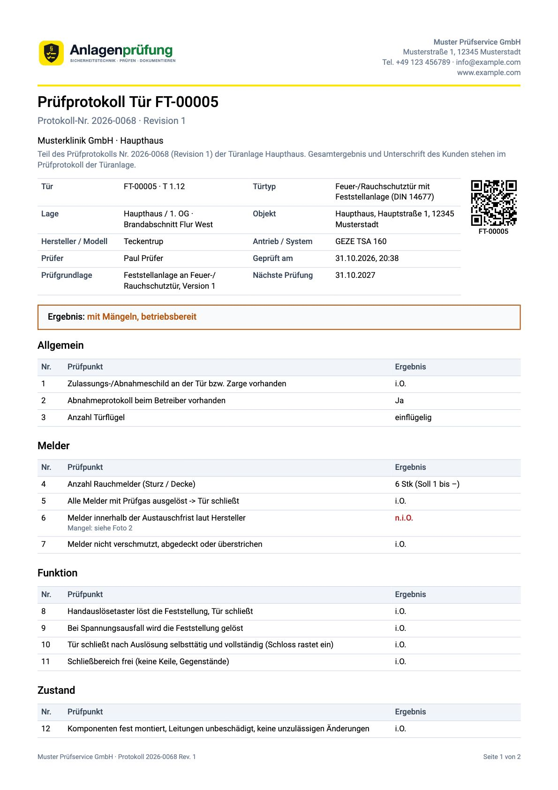
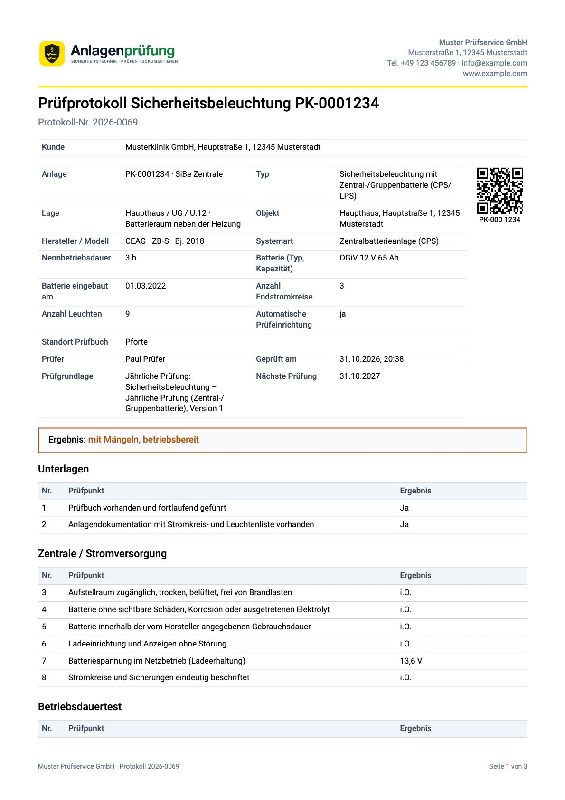
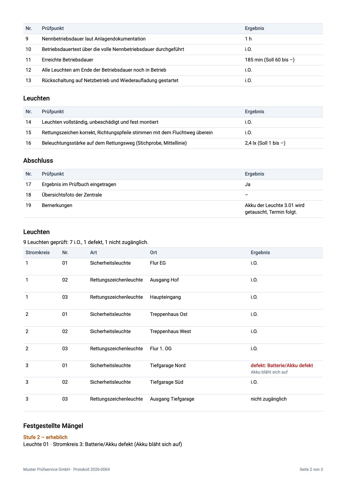
4Offline arbeiten
Die App speichert jede Eingabe zuerst auf dem Handy und überträgt sie im Hintergrund. Bei Netz geschieht das innerhalb weniger Sekunden. Ohne Netz arbeiten Sie einfach weiter. Sobald wieder Verbindung besteht, holt die App die Übertragung von selbst nach.
Die Sync-Anzeige oben links zeigt den Stand:
| gespeichert | Alles ist beim Server angekommen. |
| überträgt (3) | 3 Änderungen werden gerade gesendet. |
| offline – 3 lokal | Kein Netz. 3 Änderungen liegen sicher auf dem Handy. |
| 1 Fehler | Der Server hat eine Änderung abgelehnt. |
Ein Tipp auf die Sync-Anzeige zeigt Details. Mit Jetzt senden stoßen Sie die Übertragung von Hand an. Lehnt der Server eine Änderung ab, steht sie dort mit Begründung. Sie können sie erneut versuchen oder, nach Rücksprache, verwerfen.
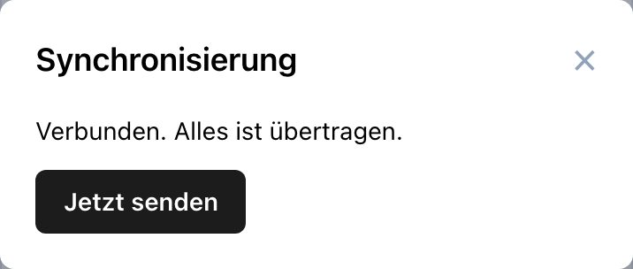
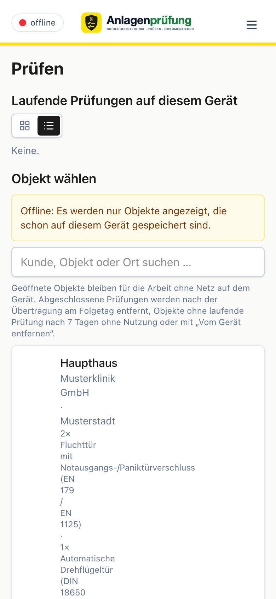
Was geht offline?
- Anlagen scannen und prüfen, Prüfart wählen, Mängel und Fotos erfassen, Anlagendaten ergänzen
- Leuchten, Melder und Komponenten abhaken, fehlende Leuchten und Melder erfassen, Melder per Code scannen und zuordnen
- neue Anlagen erfassen und vorhandenen Anlagen Etiketten zuweisen (mit vorgedruckten freien Etiketten)
- Anlagen abschließen und als Mitprüfer fertig melden (endgültig, sobald übertragen)
- Prüfungen in Objekten beginnen, die schon auf dem Gerät gespeichert sind
Was braucht Internet?
- Mitprüfen anfragen und zulassen, wieder öffnen, Doppelprüfungen klären
- Protokolle erstellen und öffnen
- Übersichten wie Fälligkeiten, Mängel, Kunden und die Verwaltung
Was bleibt auf dem Gerät?
Ein Objekt wird beim Öffnen zum Prüfen mit Netz auf das Gerät geladen: Anlagen, Leuchten und Melder, offene Mängel und die laufenden Prüfungen. So können Sie es ohne Netz prüfen. Die App räumt von selbst auf, was nicht mehr gebraucht wird:
- Abgeschlossene Prüfungen verschwinden am Folgetag vom Gerät, sobald der Server den Abschluss bestätigt, alles übertragen und das Protokoll erzeugt ist. Am Tag der Prüfung bleiben sie zum Vorzeigen beim Kunden. Danach öffnen Sie sie mit Internet jederzeit wieder; das Protokoll liegt beim Server.
- Objekte ohne laufende Prüfung verschwinden 7 Tage nach der letzten Nutzung. Mit Vom Gerät entfernen auf der Seite Prüfen geht das sofort, zum Beispiel am Ende eines Auftrags. Das klappt nur, wenn darin keine Prüfung mehr läuft und nichts mehr zu übertragen ist. Beim nächsten Öffnen mit Netz lädt die App das Objekt neu.
Online zeigt die Seite Prüfen mit auf dem Gerät, welche Objekte gerade gespeichert sind. Für einen Auftrag am nächsten Tag ohne Netz öffnen Sie das Objekt vorher einmal mit Verbindung.
5Übersichten im Büro
Anlage finden
Auf der Startseite finden Sie jede Anlage über Anlage finden. Tippen Sie mindestens zwei Zeichen, z. B. die Etikett-ID, die Bezeichnung beim Kunden („T 0.0“), die Lage, den Kunden, das Objekt, den Ort, den Typ oder eine Angabe aus den Anlagendaten wie den Antrieb. Die Treffer erscheinen sofort.
Mit QR scannen scannen Sie ein Etikett (auch mit der Handykamera) und landen direkt bei der Anlage: Das Objekt öffnet sich, und die gescannte Anlage steht als gelbe Karte Gescannt ganz oben über der Liste, ohne dass Sie scrollen müssen. Ein Tipp darauf öffnet die Anlage mit Verlauf. Ein Tipp auf einen Treffer öffnet das Objekt ebenso mit der gewählten Anlage oben.
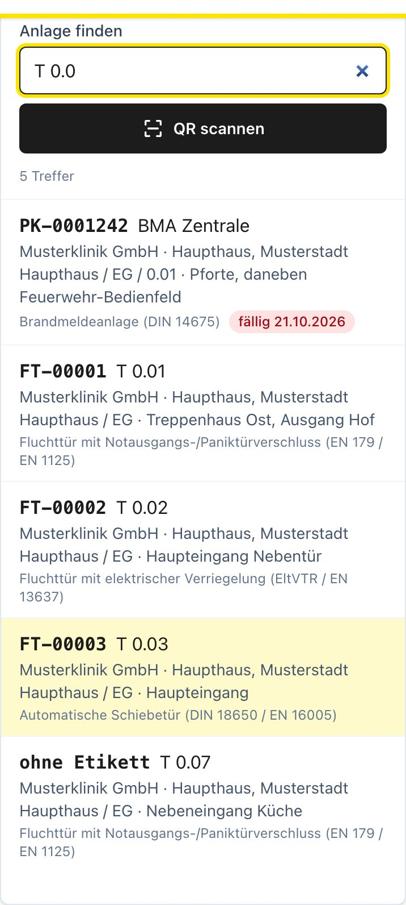
Fälligkeiten
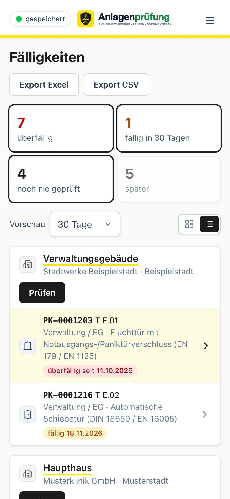
Unter Fälligkeiten planen Sie die nächsten Termine. Gezählt wird je Anlage und Prüfart: Eine Sicherheitsbeleuchtung kann mit der monatlichen Funktionsprüfung überfällig und mit der jährlichen Prüfung erst bald fällig sein. Die vier Kacheln dienen zugleich als Filter (antippen = ein-/ausblenden):
- überfällig: Prüftermin überschritten
- fällig in 30 Tagen: Zeitraum unter Vorschau einstellbar (14 bis 180 Tage)
- noch nie geprüft: ohne bekannte Prüfung
- später: alle übrigen
Die Einträge sind nach Objekt gruppiert, die dringendsten stehen oben. Hat ein Typ mehrere Prüfarten, steht die Prüfart dabei. Mit Prüfen öffnen Sie direkt die Anlagenliste des Objekts. Export Excel bzw. Export CSV lädt die aktuelle Auswahl herunter, z. B. für die Terminplanung.
Der nächste Termin wird automatisch berechnet: letzte Prüfung plus Intervall der Prüfart, oder ein abweichendes Intervall, das an der Anlage eingetragen ist.
Austausch von Meldern
Rauchwarnmelder haben ein Austauschdatum (Aufkleber, in der Regel etwa 10 Jahre nach der Herstellung). Die App warnt rechtzeitig:
| rot | überfällig: Das Austauschdatum ist überschritten. Am Tag des Datums gilt der Melder noch. |
| gelb | in 6 Monaten: Das Austauschdatum liegt innerhalb der nächsten 6 Monate. Zeit, den Austausch zu planen. |
Sie sehen die Warnung an mehreren Stellen:
- In der Prüfung bei gescanntem Melder und in der Melderliste („Austausch bis 06-2027“ bzw. „Austauschdatum 06-2026 überschritten“).
- In der Melderliste der Verwaltung (Melder verwalten) in der Spalte Austausch.
- In der Objektseite und unter Anlagen als Hinweis je Anlage, z. B. „2 Melder: Austausch überfällig“.
- Auf der Startseite im Abschnitt Melder-Austausch mit den dringendsten Anlagen.
- Unter Fälligkeiten im Abschnitt Melder-Austausch: je Anlage die betroffenen Melder mit Nummer, Wohnung, Raum und Monat. Export Excel bzw. Export CSV lädt die Liste für die Planung herunter.
Einen getauschten Melder erfassen Sie neu: den alten stellen Sie in der Melderliste auf nicht aktiv (er gibt seinen Code frei und bleibt im Verlauf), den neuen scannen Sie bei der nächsten Prüfung als neuen Melder.
Mängelverfolgung
Unter Mängel sehen Sie alle Mängel über alle Kunden, gruppiert nach Kunde und Objekt und sortiert nach Stufe. Defekte Leuchten und Melder stehen hier ebenfalls, mit Nummer und Grund. Sie können nach Stufe filtern und frei suchen.
| Offen | festgestellt, noch nicht beseitigt |
| Behoben gemeldet | Jemand hat gemeldet, dass der Mangel beseitigt ist. |
| Erledigt | bei einer Prüfung vor Ort als behoben bestätigt oder vom Admin verworfen |
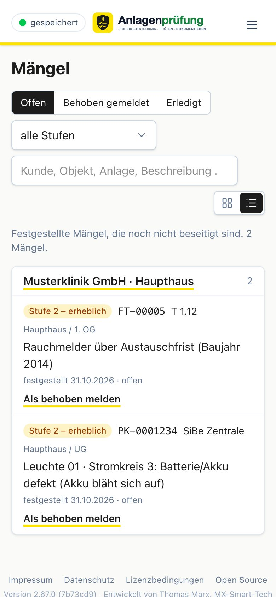
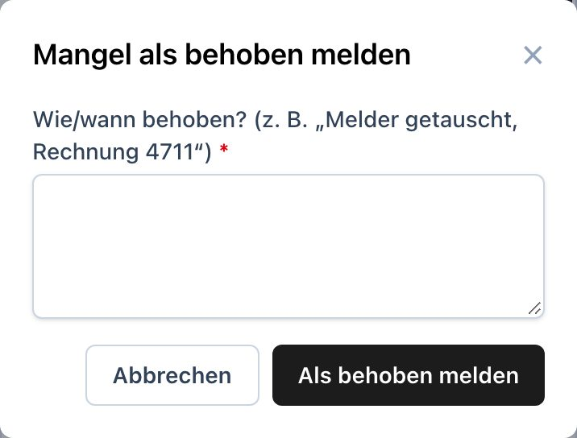
Wurde ein Mangel beseitigt, etwa nach einer Reparatur, tippen Sie auf Als behoben melden und notieren Sie, wie und wann (z. B. „Melder getauscht, Rechnung 4711“). Endgültig erledigt ist der Mangel erst, wenn ihn ein Prüfer bei der nächsten Prüfung vor Ort mit behoben ✓ bestätigt.
Doch nicht behoben setzt den Mangel zurück auf offen. Admins können Fehleinträge mit Begründung Verwerfen.
Kunden, Objekte und Anlagen
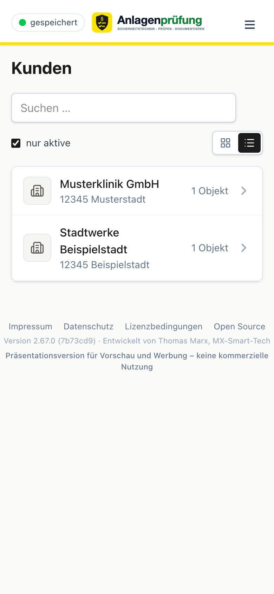
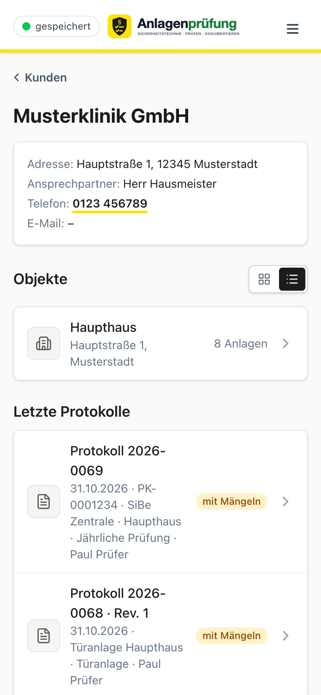
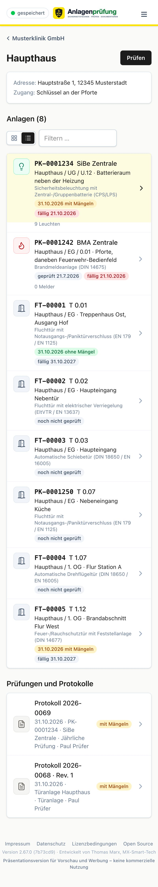
Unter Kunden finden Sie alle Kunden mit Adresse und Anzahl der Objekte. Telefonnummer und E-Mail lassen sich antippen. Planer und Admins pflegen Kunden außerdem in der Kundenliste unter Verwaltung. Ein Objekt zeigt:
- Adresse und Zugangshinweise (Schlüssel, Ansprechpartner, Parken …)
- alle Anlagen mit Typ, Kurzangaben der Art (z. B. „Zentralbatterieanlage (CPS) · 3 h“), Zahl der Leuchten bzw. Melder, letztem Ergebnis und nächster Fälligkeit. Ein Tipp auf eine Anlage zeigt alle Daten.
- Prüfungen und Protokolle: alle abgeschlossenen Prüfungen mit Protokollnummer, Anlage, Prüfart, Prüfer und Ergebnis. Ein Tipp öffnet die Protokolle. Im Fenster einer Anlage steht derselbe Verlauf nur für diese Anlage, beim Kunden die letzten Protokolle aller Objekte.
- den Knopf Prüfen
6Einrichtung und Verwaltung
Die Funktionen in diesem Kapitel sehen Benutzer mit der Rolle Admin, die meisten auch Planer. Nur für Admins sind zu prüfende Anlagen, Benutzer, Einstellungen, Datensicherung, Kundendaten löschen und Logdateien. Am besten arbeiten Sie damit am PC.
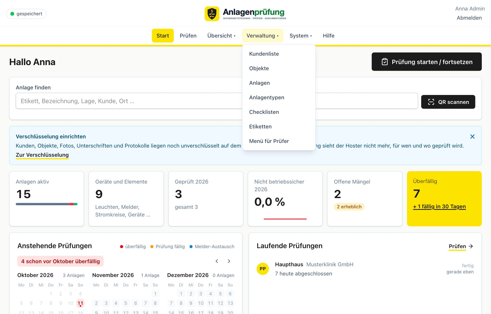
Ersteinrichtung: der erste Admin
Eine neue Instanz der App hat noch keinen Zugang. Beim ersten Aufruf zeigt die Anmeldeseite deshalb statt der Anmeldung das Formular Ersteinrichtung:
- Den Einrichtungsschlüssel eintragen. Er steht in den Zugangsdaten, die Sie bei der Bereitstellung der App erhalten haben (Form
XXXX-XXXX-XXXX-XXXX-XXXX). - Name, E-Mail (Ihr künftiger Anmeldename) und ein Passwort mit mindestens 10 Zeichen eintragen und das Passwort wiederholen.
- Zwei-Faktor-Anmeldung jetzt einrichten angehakt lassen (empfohlen). Ohne Haken können Sie sie später unter Benutzer einschalten.
- Weiter zum Schlüsselblatt tippen. Die App erzeugt jetzt den Schlüssel der Verschlüsselung dieser Instanz. Laden Sie das Schlüsselblatt als PDF herunter, drucken Sie es aus und bestätigen Sie, dass Sie es sicher aufbewahren. Gehen Sie Zurück oder meldet die App einen Fehler (z. B. falscher Einrichtungsschlüssel), bleibt der Schlüssel derselbe – das gedruckte Blatt gilt weiter.
- Administrator anlegen tippen. Die App meldet Sie direkt an; mit Haken richten Sie anschließend die Authenticator-App per QR-Code ein.
Instanz aus einem Backup wiederherstellen: Wird eine neu aufgesetzte Instanz gleich aus einem Backup wiederhergestellt, haken Sie Diese Instanz wird aus einem Backup wiederhergestellt an. Dann entsteht kein neues Schlüsselblatt; es gilt das der ursprünglichen Instanz. Spielen Sie danach das Backup unter Datensicherung ein und scannen Sie das ursprüngliche Schlüsselblatt.
Sobald es diesen ersten Zugang gibt, verschwindet das Formular für immer. Alle weiteren Zugänge legt ein Admin unter Benutzer an.
Direkt danach öffnet die App die Inbetriebnahme: Sie führt Schritt für Schritt durch die Einrichtung (Firmendaten, zu prüfende Anlagen, Checklisten, Impressum und Datenschutz, Erscheinungsbild, Etiketten, Benutzer). Jeder Schritt lässt sich überspringen. Bis Sie die Inbetriebnahme abschließen, zeigt die Startseite, wie viele Schritte erledigt sind; unter Einstellungen → Inbetriebnahme bleibt sie jederzeit erreichbar.
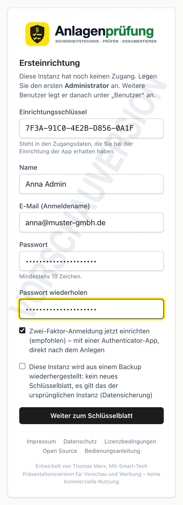
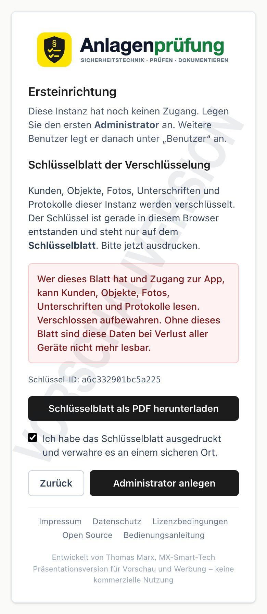
Einrichtung Schritt für Schritt
Bei einer neuen Instanz führt die Inbetriebnahme durch die ersten Schritte (Einstellungen → Inbetriebnahme). Ein Schritt gilt als erledigt, sobald die Daten es zeigen, etwa eigene Firmendaten oder vorhandene Checklisten, oder wenn Sie ihn mit Weiter bestätigen.
- Zu prüfende Anlagen einschalten: Welche Anlagenarten prüft Ihr Betrieb?
- Firmendaten für den Protokollkopf eintragen, Logo und Farben festlegen.
- Checklisten anlegen oder die Beispiele importieren, fachlich prüfen und freigeben.
- Anlagentypen mit ihren Prüfarten festlegen: Intervall, Checkliste, und ob Leuchten bzw. Melder geprüft werden.
- Benutzer anlegen und ihre Sachkunde je Anlagenart eintragen.
- Kunden in der Kundenliste anlegen, dann Objekte und Anlagen anlegen oder aus Excel importieren, dazu die Leuchten- und Melderlisten.
- Etiketten erzeugen und drucken.
Zu prüfende Anlagen einschalten
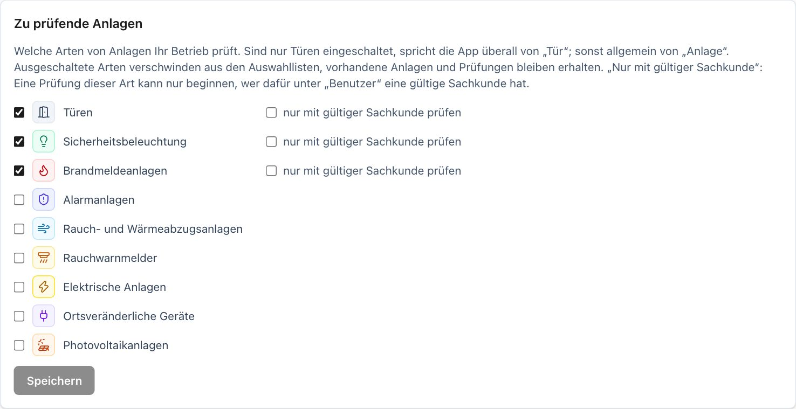
Unter System → Einstellungen → Zu prüfende Anlagen legt ein Admin fest, welche Arten Ihr Betrieb prüft: Türen, Sicherheitsbeleuchtung, Brandmeldeanlagen, Alarmanlagen, Rauch- und Wärmeabzugsanlagen sowie Rauchwarnmelder.
- Sind nur Türen eingeschaltet, spricht die App überall von „Tür“. Sonst heißt es allgemein „Anlage“, z. B. Anlagen und Anlagentypen im Menü.
- Nur die eingeschalteten Arten erscheinen in den Auswahllisten, bei den Beispiel-Checklisten und in der Benutzerverwaltung. Ausgeschaltete Arten verschwinden dort. Vorhandene Anlagen und Protokolle bleiben erhalten.
- Nur mit gültiger Sachkunde prüfen: Ist das für eine Art eingeschaltet, kann eine Prüfung dieser Art nur beginnen, wer unter Benutzer eine gültige Sachkunde dafür hat. Ohne den Haken genügt jeder aktive Zugang.
Andere Geräte übernehmen die Änderung beim nächsten Öffnen der App.
Checklisten bearbeiten
Unter Checklisten sehen Sie alle Checklisten mit Status, Anzahl der Prüfpunkte und den Typen und Prüfarten, die sie verwenden. Beispiele importieren legt Muster-Checklisten samt passender Anlagentypen als Entwurf an, und zwar für die eingeschalteten Anlagenarten (siehe Kapitel 7). Vorher bestätigen Sie einen Hinweis: Die Muster zeigen nur, wie Checklisten aufgebaut sind und funktionieren. Sie sind keine rechts- oder normkonformen Prüfprotokolle. Checklisten darf nur eine sachkundige bzw. befähigte Person erstellen und freigeben; die Verantwortung für Inhalt und Richtigkeit tragen die Person, die eine Checkliste erstellt, und die Person, die sie freigibt. + Checkliste beginnt eine leere Liste.
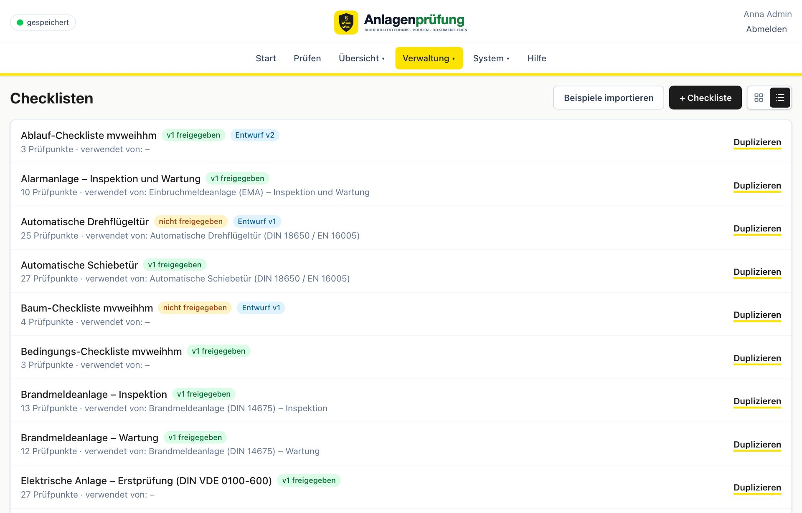
Versionen: Entwurf → freigegeben → archiviert
- Bearbeiten lässt sich nur ein Entwurf. Änderungen sichern Sie mit Speichern. Vorschau zeigt die Liste so, wie Prüfer sie sehen, inklusive Bedingungen.
- Ablaufplan zeigt die Checkliste als Schaltplan: Der Prüfablauf läuft als Hauptlinie von oben nach unten, in der Reihenfolge, in der Prüfer die Punkte sehen. Punkte mit Bedingung hängen an einem Abzweig nach rechts. Vor dem Abzweig sitzt ein Gatter, das nur durchlässt, wenn die Bedingung zutrifft; danach kehrt die Linie in die Hauptlinie zurück. Der abgefragte Punkt (z. B. „Anzahl Türflügel“) liegt nicht im Ablauf, sondern ist nur eine farbige, gestrichelte Steuerleitung in das Gatter (grün: Ja, i.O., im Soll; orange: Nein, n.i.O., außerhalb Soll). Mehrere Bedingungen erscheinen als UND- oder ODER-Gatter mit einem Eingang je Abfrage. Folgen mehrere Punkte mit gleicher Bedingung aufeinander, teilen sie sich ein Gatter. Wirkungen sitzen als orange Gatter („⚡ WENN … → Pflicht“) rechts am Punkt. Fahren Sie über einen Punkt oder ein Gatter, um die Verbindungen hervorzuheben; ein Klick auf einen Punkt öffnet ihn zum Bearbeiten. Punkte, die nie angezeigt werden können, sind rot gestrichelt.
- Die Pfad-Analyse über Punkten und Ablaufplan rechnet alle Antwortkombinationen durch: Anzahl der Wege, wie viele Punkte (davon Pflicht) eine Prüfung mindestens und höchstens enthält. Warnungen nennen Punkte, die nie erscheinen können, etwa bei widersprüchlichen Bedingungen oder „außerhalb Soll“ ohne Soll-Grenzen. Hinweise melden Bedingungen, die immer zutreffen, und steuernde Punkte ohne Pflichtangabe: Bleiben sie unbeantwortet, entfallen die abhängigen Punkte unbemerkt. Die Analyse sperrt die Freigabe nicht.
- Änderungen (ab der zweiten Version) vergleicht die Bearbeitung mit einer anderen Version: neue, entfernte, geänderte und verschobene Punkte mit altem und neuem Wert je Feld. Beim Freigeben nennt die Rückfrage die Zusammenfassung gegenüber der Vorversion.
- Freigeben macht den Entwurf zur gültigen Version. Sie ist danach unveränderlich und gilt für alle neuen Prüfungen. Die vorige Version wird archiviert. Bereits gemachte Prüfungen behalten ihre Version. In der Rückfrage bestätigen Sie mit einem Häkchen, dass Sie die Checkliste fachlich geprüft haben, dafür sachkundig sind und die Verantwortung für den Inhalt tragen. Ohne Häkchen lässt sich nicht freigeben. Wer wann freigegeben hat, wird gespeichert.
- Für Änderungen an einer freigegebenen Liste wählen Sie Neue Version bearbeiten. Ein ungewollter Entwurf lässt sich mit Entwurf verwerfen löschen.
- Ohne freigegebene Version kann mit dieser Prüfart nicht geprüft werden. Der Prüfer erhält dann einen Hinweis.
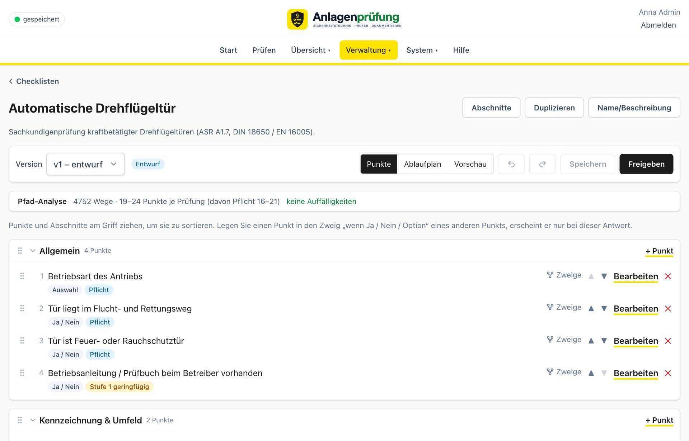
Prüfpunkt anlegen oder bearbeiten
+ Prüfpunkt bzw. Bearbeiten öffnet das Formular. Die Reihenfolge ändern Sie per Drag & Drop am Griff ⠿ vor jedem Punkt und Abschnitt (alternativ mit ▲▼). Rückgängig und Wiederholen (Strg/Cmd+Z) nehmen Änderungen zurück, solange Sie die Seite nicht verlassen.
Abschnitte: Mit Abschnitte oben rechts legen Sie die Abschnitte der Checkliste vorab an, benennen sie um, sortieren sie (▲▼) oder löschen sie. Beim Löschen eines Abschnitts mit Prüfpunkten wählen Sie, ob die Punkte in einen anderen Abschnitt wandern oder mitgelöscht werden. Noch leere Abschnitte erscheinen im Editor mit + Punkt, der Prüfer sieht sie nicht.
Verzweigungen: Unter jedem Ja/Nein- und Auswahl-Punkt stehen farbige Zweige („wenn Ja“, „wenn Nein“ …). Ziehen Sie einen Punkt in einen Zweig, erscheint er für Prüfer nur bei dieser Antwort; mit + Unterpunkt legen Sie ihn direkt dort an, Zweige zeigt auch leere Zweige. Zweige gibt es bei Ja/Nein („wenn Ja / Nein“), Auswahl (je Option), i.O./n.i.O. (je Ergebnis) und Messwerten („außerhalb Soll“ / „im Soll“); Gruppen aus mehreren Bedingungen erscheinen in einem grauen Zweig. Zieht man den Punkt wieder heraus, entfällt die Bedingung.
- Prüfpunkt (Text), Abschnitt (Auswahl aus den angelegten Abschnitten, über „+ Neuer Abschnitt …“ auch ein neuer) und Antworttyp: i.O./n.i.O./entfällt, Messwert, Ja/Nein, Auswahl, Freitext, Foto
- Messwert: Einheit sowie Soll min und Soll max. Werte außerhalb erzeugen einen Mangel.
- Ja/Nein: Welche Antwort ist in Ordnung? „–“ bedeutet reine Information ohne Mangel.
- Auswahl: Optionen, jeweils mit „ist Mangel“ und Stufe
- Vorgeschlagene Mangelstufe, Pflichtangabe, Foto bei Mangel Pflicht
- Hinweis / Normbezug: Er erscheint klein unter dem Punkt.
- Bedingung: Der Punkt erscheint nur, wenn ein vorheriger Punkt eine bestimmte Antwort hat. Mit + Bedingung wählen Sie den Punkt und den Vergleich: bei Ja/Nein, Auswahl und i.O./n.i.O. „ist“, „ist nicht“ oder „ist eines von“; bei Messwerten „kleiner als“, „größer als“, „zwischen“, „außerhalb Soll“ oder „im Soll“; bei Ja/Nein und Auswahl außerdem „ergibt Mangel“. Mehrere Bedingungen verknüpfen Sie mit UND (alle müssen zutreffen) oder ODER (mindestens eine). Beispiel: Ein Foto-Punkt „Schaden dokumentieren“ erscheint nur bei n.i.O. oder wenn die Schließkraft außerhalb Soll liegt.
- Wirkungen: Der Punkt bleibt sichtbar, aber unter einer Bedingung gelten strengere oder andere Regeln. Mit + Wirkung wählen Sie wie bei der Bedingung den Punkt und den Vergleich und legen fest, was dann gilt: wird Pflichtangabe, Mangelstufe mindestens 1 bis 3 (ein Mangel bekommt mindestens diese Stufe, nie weniger) oder bei Messwerten ein anderer Soll-Bereich. Beispiel: Die Schließkraft hat grundsätzlich 150 N als Grenze; bei Betriebsart „Low-Energy“ gelten 67 N, und ein Mangel hat mindestens Stufe 3. Mehrere Wirkungen wirken zusammen. Die Prüfung, die Mängel und das Prüfprotokoll verwenden den jeweils geltenden Soll-Bereich.
Leuchten und Melder gehören nicht in die Checkliste. Sie werden als Elemente der Anlage geführt und in der Prüfung eigens abgehakt.
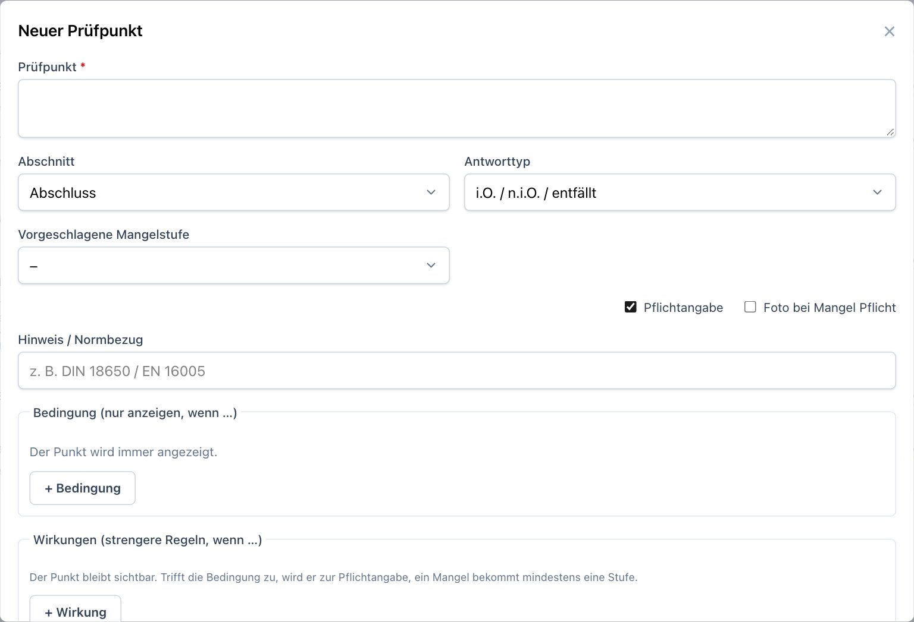
Anlagentypen und Prüfarten
Unter Anlagentypen legen Sie fest, wie oft und womit eine Anlage geprüft wird. Sind mehrere Arten eingeschaltet, filtern Knöpfe oben nach Art, und die Liste zeigt die Art jedes Typs.
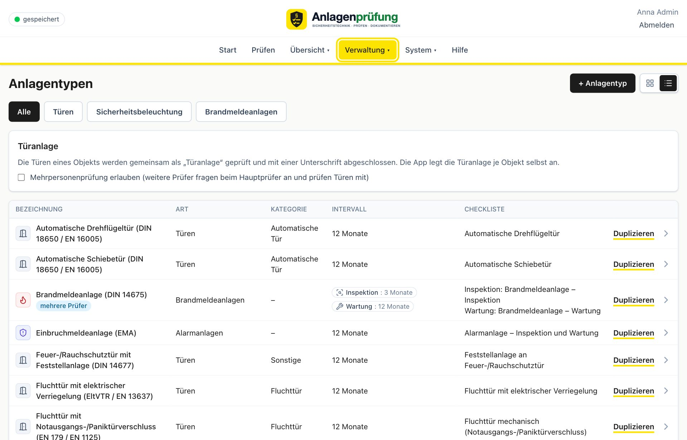
Ein Typ besteht aus:
- Bezeichnung und Art. Die Art wählen Sie beim Anlegen, danach steht sie fest.
- Kategorie (Fluchttür, Automatische Tür, Sonstige), nur bei Türen
- einer oder mehreren Prüfarten mit Name, Intervall in Monaten und Checkliste. Geprüft wird immer mit der aktuell freigegebenen Version.
Für den häufigen Fall mit nur einer Prüfart zeigt das Fenster einfach Prüfintervall und Checkliste. + weitere Prüfart fügt eine zweite hinzu, z. B. die monatliche Funktionsprüfung neben der jährlichen Prüfung.
- Jede Prüfart hat ihre eigene Fälligkeit.
- Beim Öffnen einer solchen Anlage fragt die App „Welche Prüfung?“.
- Eine Prüfart, mit der schon geprüft wurde, wird beim Entfernen nur ausgeblendet. Ihre Protokolle bleiben erhalten.
Nicht mehr genutzte Typen stellen Sie auf nicht aktiv.
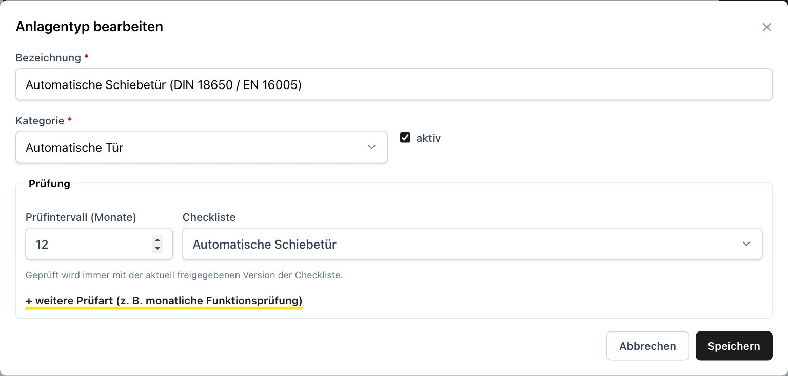
Leuchten und Melder je Prüfart
Bei Arten mit Elementen legen Sie je Prüfart fest, ob die Leuchten bzw. Melder geprüft werden:
| keine | Die Prüfart prüft nur die Anlage, z. B. die monatliche Funktionsprüfung über die Prüfeinrichtung. |
| alle bei jedem Termin | Jede aktive Leuchte bzw. jeder Melder braucht ein Ergebnis, bevor die Anlage abgeschlossen werden kann. |
| Anteil je Termin | Teilprüfung, z. B. 25 % der Melder je Inspektion. Dazu stellen Sie ein, wie oft jedes Element mindestens drankommen muss (z. B. alle 12 Monate). Die App schlägt bei jedem Termin die am längsten nicht geprüften vor, mindestens aber alle überfälligen. |
Kunden, Objekte, Anlagen anlegen
- Kunde: Verwaltung → Kundenliste → + Kunde (siehe unten). Name ist Pflicht, dazu Adresse, Ansprechpartner, Telefon, E-Mail und Notiz.
- Objekt: Kunde öffnen → + Objekt, oder Verwaltung → Objekte → + Objekt und dort den Kunden wählen. Die Adresse des Kunden wird übernommen, sobald er gewählt ist; was Sie selbst schon eingetragen haben, bleibt stehen. Tragen Sie Zugangshinweise ein, die Prüfer sehen sie vor Ort.
- Anlage: Objekt öffnen → + Anlage, oder Verwaltung → Anlagen → + Anlage und dort das Objekt wählen. Unter der Auswahl zeigt die App Kunde, Adresse und Zugangshinweise des Objekts; Gebäude, Etage, Hersteller, Modell und Antrieb wählen Sie aus den Werten der dort schon erfassten Anlagen oder legen über „+ Neues …“ einen neuen an. Der Anlagentyp ist Pflicht und bestimmt, welche weiteren Felder erscheinen. Etikett-ID, Bezeichnung beim Kunden, Gebäude, Etage, Raum, Lage, Hersteller, Modell und Baujahr ergänzen Sie nach Bedarf.
Bestand übernehmen: Tragen Sie je Prüfart das Datum der letzten Prüfung ein, z. B. einer früheren Prüffirma. Die App berechnet daraus die nächste Fälligkeit. Ein abweichendes Intervall an der Anlage überschreibt das der Prüfart.
Bei Anlagen mit Elementen steht oben im Fenster der Knopf Leuchten verwalten, Melder verwalten bzw. Komponenten verwalten. Er öffnet die Elementliste.
Nicht mehr vorhandene Anlagen setzen Sie auf stillgelegt. Löschen geht nur bei Anlagen ohne Prüfungen. Das Etikett wird dann wieder frei. Kunden und Objekte, die nicht mehr betreut werden, stellen Sie mit Bearbeiten auf nicht aktiv.
Kundenliste
Unter Verwaltung → Kundenliste sehen Sie alle Kunden als Tabelle mit Adresse, Ansprechpartner, Telefon und E-Mail. Mit + Kunde legen Sie einen Kunden an, Bearbeiten ändert ihn direkt in der Liste, und Objekte öffnet seine Objekte. Die Suche findet Kunden auch über Ort, Ansprechpartner oder Telefonnummer. Export Excel und Export CSV laden die gefilterte Liste herunter.
Türanlage und Mehrpersonenprüfung
Die Türanlage eines Objekts legt die App selbst an; alle Türen des Objekts gehören von Anfang an dazu, auch neu angelegte oder importierte. Sie hat keine eigenen Stammdaten, kein Etikett und keine eigene Checkliste und erscheint nicht in den Anlagenlisten. Zieht eine Tür in ein anderes Objekt um, gehört sie zu dessen Türanlage.
Ob mehrere Prüfer die Türen eines Objekts gemeinsam prüfen dürfen, stellen Sie unter Verwaltung → Türtypen im Kasten Türanlage ein (Mehrpersonenprüfung erlauben). An den einzelnen Türtypen gibt es diesen Schalter nicht mehr. Ohne Mehrpersonenprüfung prüft in einem Objekt immer nur ein Prüfer Türen, weil die Türanlage als Ganzes reserviert ist; arbeiten Sie mit mehreren Prüfern im selben Gebäude, schalten Sie sie ein.
Anlagenlisten importieren (Excel/CSV)
Hat der Kunde schon eine Liste, z. B. eine Türliste aus dem Brandschutzplan oder von der letzten Prüffirma, müssen Sie sie nicht abtippen:
- Objekt öffnen → Importieren … (neben + Anlage).
- Datei wählen: Excel (
.xlsx) oder CSV. Gelesen wird das erste Tabellenblatt. Die erste Zeile muss die Spaltenüberschriften enthalten, darunter steht eine Zeile je Anlage. Eine leere Liste mit den passenden Spalten laden Sie dort mit Vorlage Excel oder Vorlage CSV herunter. In der Excel-Vorlage gibt es für den Typ eine Auswahlliste mit Ihren Anlagentypen. Ältere.xls-Dateien speichern Sie vorher in Excel als.xlsx. - Spalten zuordnen: Die App erkennt übliche Überschriften („Tür-Nr.“, „Geschoss“, „Standort“, „Baujahr“, „Letzte Prüfung“ …) selbst. Prüfen Sie die Vorschläge und korrigieren Sie sie bei Bedarf.
- Typen zuordnen: Jeder Wert aus der Typ-Spalte der Datei braucht einen Anlagentyp der App. Eindeutige Werte wie „Schiebetür“ oder „T30 mit FSA“ erkennt die App selbst, bei mehrdeutigen wählen Sie. Gibt es keine Typ-Spalte, wählen Sie einen Typ für alle.
- Vorschau prüfen und … Anlagen anlegen.
- Schon vorhanden: Anlagen, die es im Objekt schon gibt (gleiche Etikett-ID oder gleiche Bezeichnung beim Kunden), werden übersprungen. Sie können eine Datei also gefahrlos mehrfach importieren.
- Fehlerhafte Zeilen werden mit Grund angezeigt und nicht angelegt. Korrigieren Sie die Datei und laden Sie sie erneut.
- Ohne Etiketten: Hat die Liste keine Etikett-Spalte, werden die Anlagen ohne Etikett angelegt. Die Prüfer weisen die Etiketten bei der ersten Prüfung vor Ort zu (siehe Etikett bei der ersten Prüfung zuweisen).
- Letzte Prüfung: Ist das Datum angegeben (z. B.
15.03.2025oder03/2025), gilt es für die erste Prüfart des Typs, und die App berechnet daraus die nächste Fälligkeit.
.xlsx) und CSV. Exporte und leere Vorlagen gibt es ebenfalls in beiden Formaten. CSV-Dateien der App sind mit Semikolon getrennt und öffnen sich in Excel direkt mit Umlauten.
Leuchten, Melder und Komponenten verwalten
Die Elementliste einer Anlage öffnen Sie mit dem Knopf Leuchten verwalten, Melder verwalten bzw. Komponenten verwalten. Er steht oben im Fenster der Anlage, in der Anlagenliste des Objekts und unter Verwaltung → Anlagen, jeweils mit der Anzahl, z. B. „Melder verwalten (12)“. Dort sehen Sie alle Elemente nach Stromkreis bzw. Meldergruppe, mit Art, Ort, Typ und dem Datum, an dem sie zuletzt geprüft wurden. noch nie markiert Elemente ohne Prüfung.
- + Leuchte bzw. + Melder erfasst ein Element. Erste freie Nr. neben der Nummer trägt die kleinste Nummer ein, die im eingegebenen Stromkreis bzw. in der Meldergruppe oder Wohnung noch frei ist. Lücken kommen zuerst, die Nummern stillgelegter Elemente gelten als frei. Ein Klick auf eine Zeile ändert ein Element.
- Wohnung / Bereich (bzw. Stromkreis, Meldergruppe, Raum …) wählen Sie aus einer Liste. Die Liste pflegen Sie im Abschnitt Wohnungen / Bereiche über der Elementliste: + Wohnung / Bereich legt eine an, Mehrere anlegen … eine ganze Reihe, z. B. „WE 1“ mit Anzahl 12 für WE 1 bis WE 12. Die Zahl hinter jedem Namen nennt die aktiven Melder darin. Ein Klick darauf benennt sie um, die Melder darin ändern sich mit. Dort tragen Sie bei Rauchwarnmeldern und Geräten auch Gebäude und Etage ein (Auswahl aus den Gebäuden und Etagen im Objekt oder „+ Neues Gebäude …“); bei Mehrere anlegen … gelten sie für alle neuen. Die Melder erben die Lage ihrer Wohnung: Die Liste ordnet die Wohnungen nach Gebäude, die Prüfung lässt sich nach Gebäude filtern, und das Protokoll nennt die Lage bei der Wohnung, z. B. „WE 1 (Haus A, EG)“. Löschen kann der Admin nur leere Wohnungen. Fehlt beim Erfassen eine Wohnung, legt + Wohnung / Bereich anlegen … am Ende der Auswahl sie gleich an. In der Prüfung, auch offline, gilt eine so angelegte Wohnung zunächst nur auf dem Gerät; in die Liste kommt sie, sobald ein Melder darin gespeichert und übertragen ist. Gruppen aus einem Import oder von gescannten Meldern kommen automatisch in die Liste.
- Typ / Hersteller wählen Sie aus den Typen, die in der Anlage schon vorkommen. Bei Rauchwarnmeldern sind das alle Melder des Objekts. Ist der Typ noch nicht dabei, wählen Sie Neuer Typ / Hersteller … und tragen ihn ein. Ab dann steht er bei jedem weiteren Element zur Auswahl, auch beim Anlegen mehrerer, beim Erfassen in der Prüfung und beim Scannen. Tippen Sie einen vorhandenen Typ in anderer Schreibweise ein (z. B. „ei 650“ statt „Ei 650“), übernimmt die App die vorhandene. Beim Scannen eines Herstellercodes ist der Typ aus dem Code vorausgewählt. Solange es noch keinen Typ gibt, ist das Feld ein einfaches Textfeld.
- Ausgebaute oder ersetzte Elemente stellen Sie auf nicht aktiv. Geprüfte Elemente lassen sich nicht löschen, damit der Verlauf erhalten bleibt. stillgelegte zeigen blendet sie wieder ein.
- Export Excel bzw. Export CSV lädt die Liste herunter, z. B. für den Kunden.
Mehrere auf einmal anlegen
Für eine neue Meldergruppe oder einen Stromkreis müssen Sie nicht jedes Element einzeln erfassen. Tippen Sie auf Mehrere Melder anlegen … bzw. Mehrere Leuchten anlegen … und geben Sie an:
- Meldergruppe bzw. Stromkreis
- Art, z. B. Rauchmelder oder Handfeuermelder
- Ort (bei Meldern Installationsort) und Typ / Hersteller (optional)
- die weiteren Angaben der Art (optional), z. B. Eingebaut am, Austauschdatum und Funkvernetzt bei Rauchwarnmeldern
- Startnummer und Anzahl. Erste freie Nr. neben der Startnummer trägt die kleinste Nummer ein, die in der Gruppe noch frei ist.
Die App vergibt die Nummern ab der Startnummer und zeigt vorab, was angelegt wird, z. B. „Melder 1 bis 12 in Meldergruppe 5“. Führende Nullen bleiben erhalten: Ab „01“ zählt sie 01, 02 … 10. Nummern, die es in der Gruppe schon gibt, überspringt sie und nimmt stattdessen die nächsten freien. Es entstehen also immer so viele Elemente, wie Sie angeben: Ab 15 mit Anzahl 2 sind das 15 und 16, ist die 16 schon belegt, 15 und 17. Die Vorschau nennt die belegten Nummern. Alle Angaben gelten für jedes neue Element. Nur Code und Seriennummer fehlen hier, weil sie bei jedem Melder anders sind. Abweichungen und diese beiden Angaben tragen Sie danach je Element mit einem Klick auf die Zeile ein.
Code und Austauschdatum von Meldern
Bei Rauchwarnmeldern zeigt die Liste zusätzlich die Spalten Code und Austausch. Im Fenster eines Melders stehen die Felder Code (Aufkleber), Seriennummer, Eingebaut am, Austauschdatum und Funkvernetzt. Den Code müssen Sie meist nicht tippen: Beim ersten Scan in der Prüfung wird er automatisch eingetragen (siehe Melder scannen und zuordnen). Ein Code kann nur einem aktiven Melder gehören. Melder ohne Code sind mit „ohne Code“ markiert.
Liste importieren
Die meisten Zentralen liefern eine Leuchten- oder Melderliste als Excel oder CSV. Wählen Sie die Datei aus. Die App erkennt Spalten wie „Stromkreis“, „Meldergruppe“, „Nr“, „Art“, „Ort“ bzw. „Installationsort“ und „Typ“ sowie übliche Kürzel, etwa „RZL“ für Rettungszeichenleuchte, „OM“ für optischen Rauchmelder oder „HFM“ für Handfeuermelder. Steht die Art nur in der Typ-Spalte, wird sie dort erkannt.
Bei Rauchwarnmeldern erkennt der Import außerdem die Spalten Wohnung (bzw. „WE“, „Nutzungseinheit“) und Code (auch „QR-Code“, „Herstellercode“). Der Code ist der Inhalt des QR-Aufklebers, nicht die Seriennummer als Text. Doppelte Codes in der Datei und Codes, die in der Anlage schon vergeben sind, zeigt die Vorschau als Fehler. Ein Code, der in einer anderen Anlage schon vergeben ist, lässt den Import ganz abbrechen, es wird nichts angelegt.
Meldernummern wie 12/3 teilt die App selbst in Meldergruppe 12 und Melder 3 auf. Vorhandene Elemente (gleiche Gruppe und Nummer) werden übersprungen.
Haben Sie keine fertige Liste, laden Sie mit Vorlage Excel oder Vorlage CSV eine leere Liste mit den passenden Spalten herunter. In der Excel-Vorlage wählen Sie die Art aus einer Auswahlliste.
Alle Anlagen und Export
Unter Anlagen sehen Sie alle Anlagen aller Kunden in einer Tabelle. Sie können filtern (Suche, Kunde, Typ, aktiv/stillgelegt) und per Klick auf die Spaltenköpfe sortieren. Die Liste zeigt auch offene Mängel je Anlage. Export Excel bzw. Export CSV lädt die gefilterten Anlagen mit allen Daten herunter, bei mehreren Arten auch mit Art und Anlagendaten. Bei Anlagen mit Leuchten oder Meldern führt der Knopf in der Typ-Spalte direkt zur Elementliste.
Gesamtliste mit Elementen
Unter System → Gesamtliste (nur Admins) steht der ganze Bestand in einer Liste: Kunden, Objekte, Anlagen und ihre Elemente (Melder, Leuchten …), z. B. als Übergabe an einen Kunden oder als Melderliste für einen Austausch.
- Gestaffelt nach: Kreuzen Sie an, welche Ebenen die Liste zeigt – Kunden, Objekte, Anlagen, Melder bzw. Elemente, auch mehrere zugleich. Jede gewählte Ebene bekommt eigene Zeilen, darunter ihre Einträge. Kunde, Objekt und Anlage stehen in jeder Zeile mit. Nur „Melder“ ergibt eine flache Melderliste.
- Filter: Kunden, Objekte und (bei mehreren Anlagenarten) Arten wählen Sie aus einer Liste mit Suche, auch mehrere. auch inaktive und stillgelegte nimmt Stillgelegtes mit auf. Die gewählten Ebenen und dieser Haken bleiben auf dem Gerät gespeichert.
- Je Anlage bzw. Element zeigt die Liste Etikett oder Code, zuletzt geprüft mit Ergebnis und die nächste Prüfung. Das QR-Symbol daneben zeigt den QR-Code. Melder haben ihre eigene Fälligkeit, andere Elemente die ihrer Anlage.
- Export Excel bzw. Export CSV lädt die Liste mit allen Daten der gewählten Ebenen herunter, auch wenn die Seite zunächst nur einen Teil der Zeilen zeigt. Statt des QR-Bilds steht im Export die Adresse aus dem QR-Code samt Mandantencode.
Etiketten erzeugen und drucken
Jede Anlage bekommt einen Aufkleber mit QR-Code und Etikett-ID, bei Sicherheitsbeleuchtung und Brandmeldeanlage z. B. an der Zentrale. Das geht in zwei Schritten:
- IDs erzeugen: Etiketten → Anzahl eingeben, optional eine Notiz („Druck Oktober 2026“) → Etiketten-IDs erzeugen. Die IDs werden fortlaufend vergeben und nie wiederverwendet. Die Liste zeigt, welche frei und welche einer Anlage zugeordnet sind.
- Aufbau der ID: Präfix Ihrer Firma, 6 Ziffern und eine Prüfziffer, z. B.
PK-000 0427. Gedruckt wird in zwei Gruppen, damit sich die Nummer leicht abtippen lässt. Beim Eintippen sind Leerzeichen, Bindestrich, Groß-/Kleinschreibung und führende Nullen egal („pk427“ genügt). Vertippt man sich, erkennt die App das an der Prüfziffer und weist darauf hin. Das Präfix legt der Admin unter Einstellungen → Etiketten fest. Ältere Etiketten wieFT-00815bleiben gültig. - Mandantencode: Ihre App hat einen zufälligen, festen Code aus fünf Zeichen, z. B.
K7Q3X(zu sehen unter Einstellungen → Etiketten). Er steckt in jedem neu gedruckten QR-Code und steht klein neben der Telefonnummer auf dem Etikett. Scannt jemand ein Etikett einer anderen Firma, die dieselbe App nutzt, meldet die App „Dieses Etikett gehört zu einer anderen Instanz“ und öffnet keine Anlage – auch wenn die Nummer zufällig gleich ist. Etiketten ohne Code (vor Version 2.57 gedruckt) funktionieren weiter wie bisher. - Drucken: Etiketten drucken erstellt einen PDF-Druckbogen in exakten Maßen.
Sie müssen Etiketten nicht vorab bestimmten Anlagen zuordnen. Geben Sie den Prüfern genug freie Etiketten mit. Vor Ort weisen sie jeder Anlage ohne Etikett eines zu (siehe Etikett bei der ersten Prüfung zuweisen).
Druckbogen erstellen
- Bogen: Etikettenformat wählen (z. B. Avery Zweckform L4773 wetterfest, 24 je Bogen) oder ein eigenes Format in mm eingeben. Bei einem angebrochenen Bogen klicken Sie in der kleinen Bogenvorschau auf das erste freie Feld.
- Etiketten: frei (neu), mit Anlage (z. B. Ersatz für beschädigte Aufkleber) oder alle, dann auswählen. Bei zugeordneten Etiketten druckt die App auf Wunsch Bezeichnung und Objekt mit.
- Drucken: PDF erstellen → PDF öffnen → drucken.
Das Feld App-Adresse im QR-Code ist richtig vorbelegt. Ändern Sie es nur, wenn sich die Adresse der App ändert.
Melder-Etiketten drucken
Melder, die keinen brauchbaren Herstellercode tragen, bekommen ein eigenes Melder-Etikett. Es ist klein genug für das Gerät und enthält einen QR-Code mit der App-Adresse. Auch die normale Handykamera führt damit zur Anlage des Melders.
- Etiketten → Melder-Etiketten drucken.
- Bogen: Wählen Sie ein kleines Format, 38,1 × 21,2 mm (65 je Bogen) oder 48,5 × 25,4 mm (40 je Bogen). Bei einem angebrochenen Bogen klicken Sie in der Bogenvorschau auf das erste freie Feld.
- Melder-Codes: Anzahl eingeben, Codes erzeugen. Die App zeigt, wie viele Bogen das sind.
- Drucken: Zuerst einen Probedruck mit Rahmen auf Normalpapier gegen den Bogen halten und ggf. den Druckerversatz anpassen. Dann PDF erstellen → PDF öffnen → drucken, im Druckdialog mit „Tatsächliche Größe“ / 100 %.
Jedes Etikett zeigt den QR-Code, den Code in zwei Zeilen (z. B. M4F7K und 2QXD3) und „Melder-Code“. Der Code besteht aus einem M, acht Zeichen und einem Prüfzeichen. Verwechselbare Buchstaben wie I, L, O, U und Z kommen nicht vor. Ein Tippfehler wird an der Prüfsumme erkannt.
- Etikett beschädigt oder verloren: Drucken Sie ein neues. Der Melder hat noch den alten Code. Ersetzen Sie ihn in der Melderliste (Melder verwalten, Melder anklicken) im Feld Code (Aufkleber) durch den neuen, den Sie eintippen. Danach findet ihn der Scan unter dem neuen Code.
- Melder getauscht: Der neue Melder bekommt seinen eigenen Code beim ersten Scan, der alte wird stillgelegt.
Benutzer und Sachkunde
Unter Benutzer → + Benutzer legen Sie Zugänge an: Name, Rolle (Prüfer, Planer oder Admin), E-Mail als Anmeldename und ein Start-Passwort mit mindestens 10 Zeichen. Teilen Sie das Passwort auf sicherem Weg mit, z. B. persönlich oder per Telefon. Mit Passwort bei der nächsten Anmeldung ändern (vorbelegt) legt der Benutzer bei der ersten Anmeldung ein eigenes fest; so kennt nur er sein Passwort.
Die Zahl der aktiven Benutzer ist je Instanz begrenzt; die Seite zeigt „Aktive Benutzer: x von y“. Ist die Grenze erreicht, lassen sich keine Zugänge anlegen oder wieder aktivieren, bis Sie einen anderen deaktivieren. Mehr Zugänge vereinbaren Sie mit dem Betreiber der Instanz; der Supportzugang zählt nicht mit.
- Bearbeiten: Name, Rolle, aktiv und die Sachkunde. Entfernen Sie den Haken aktiv, kann sich der Benutzer nicht mehr anmelden. Seine Prüfungen bleiben erhalten.
- Passwort: setzt ein neues Passwort, z. B. wenn jemand seins vergessen hat. Auch hier kann der Benutzer verpflichtet werden, es bei der nächsten Anmeldung zu ändern.
Sachkunde je Anlagenart
Je eingeschalteter Anlagenart tragen Sie einen Nachweis ein, z. B. „Sachkundiger für kraftbetätigte Türen und Tore“ oder „Fachkraft nach DIN 14675“, und optional ein Datum gültig bis. Der Nachweis erscheint im Protokoll neben dem Prüfer. Leer lassen, wenn keine Sachkunde vorliegt.
Das Zertifikat oder die Schulungsbescheinigung selbst legen Sie je Art als Datei dazu:
- Datei wählt eine Datei aus (PDF bis 10 MB oder ein Foto).
- Foto öffnet am Handy direkt die Kamera. Fotos werden automatisch verkleinert, bleiben aber gut lesbar.
- Die gewählte Datei erscheint unter ihrer Zeile und wird beim Speichern hochgeladen. Danach öffnet Ansehen den Nachweis, Datei bzw. Foto ersetzt ihn, Entfernen löscht ihn. Die Sachkunde selbst bleibt dabei erhalten.
- Die Datei sehen nur Admins und der Benutzer selbst. Kollegen sehen im Protokoll nur den Text des Nachweises. In der Benutzerliste zeigt eine Büroklammer, dass eine Datei vorliegt.
Die Spalte Sachkunde zeigt je Art: grün = gültig, gelb = läuft in den nächsten 60 Tagen ab, rot = abgelaufen. Läuft eine Sachkunde bald ab, weist die Startseite Admins und Planer darauf hin. Ist die Sachkunde für eine Art Pflicht, kann ohne gültigen Nachweis keine Prüfung dieser Art beginnen.
Menü für Prüfer
Unter Verwaltung → Menü für Prüfer legen Admins und Planer fest, welche Bereiche Prüfer sehen. Wählbar sind Fälligkeiten, Mängel, Kunden und Hilfe. Start und Prüfen sind immer sichtbar, Verwaltung und System sehen Prüfer nie.
Ausgeblendete Bereiche sind für Prüfer auch über die direkte Adresse gesperrt. Objekte und Anlagen bleiben über Anlage finden und Prüfen erreichbar, auch wenn Kunden ausgeblendet ist. Prüfer sehen die Änderung beim nächsten Öffnen der App.
Firmendaten, Erscheinungsbild, Rechtstexte
Unter System → Einstellungen finden Sie eine Übersicht, gegliedert in Firma (Firmendaten, Erscheinungsbild), Prüfungen (Zu prüfende Anlagen, Ansicht der Prüfung, Etiketten), Sicherheit (Verschlüsselung), Rechtliches (Impressum und Datenschutz, Zustimmungen zur Lizenz) und System (Mail, Fehlerprotokoll, Kundendaten löschen). Ein Klick öffnet den Punkt; links sehen Sie am PC weiter alle Punkte, mit Alle Einstellungen geht es zurück zur Übersicht.
Firmendaten
Unter Firmendaten pflegen Sie Firmenname, Adresse, Telefon, E-Mail, Website und einen Zusatz für den Kopf jedes Protokolls. Dazu kommt der Hinweistext, der unter jedem Protokoll steht. Änderungen gelten für alle künftig erstellten Protokolle. Bereits erstellte PDFs bleiben unverändert.
Sprache
Die App spricht Deutsch oder Englisch. Welche Sprache ein Gerät zeigt, folgt der Sprache des Browsers bzw. des Betriebssystems: Deutsch, wenn sie Deutsch ist, sonst Englisch. Unten auf jeder Seite und auf der Anmeldeseite lässt sich das je Gerät umstellen (Automatisch, Deutsch, English). Checklisten, Anlagentypen, Mängeltexte und Firmendaten bleiben, wie Sie sie eingegeben haben.
Die Prüfprotokolle und Etiketten erscheinen dagegen in einer festen Sprache, unabhängig vom Gerät des Prüfers: unter Firmendaten bei Sprache der Prüfprotokolle (Vorgabe Deutsch).
Erscheinungsbild
Hier legen Sie Logo, Hauptfarbe, Akzentfarbe und den App-Namen (Fenstertitel) fest. Das Logo darf ein SVG, PNG, JPEG oder WebP sein, höchstens 2 MB, am besten im Querformat mit transparentem Hintergrund. Die App erzeugt daraus automatisch eine Fassung für die PDF-Protokolle.
Eine Vorschau zeigt Menüpunkt, Knopf und Link in den gewählten Farben. Sind die Farben schlecht lesbar, erscheint ein Hinweis. Die Änderungen gelten sofort für alle Benutzer, auch für die Anmeldeseite und neue Protokolle. Auf Standard zurücksetzen stellt das ursprüngliche Aussehen wieder her.
Etiketten
Hier legen Sie das Präfix Ihrer Etiketten fest: 2 oder 3 Buchstaben, z. B. PK. Es steht vor jeder neu erzeugten Etikett-ID, so erkennt man im Gebäude sofort Ihre Etiketten neben denen anderer Prüffirmen. Vermeiden Sie O, I, S, B und Z, weil sie beim Abtippen leicht mit Ziffern verwechselt werden. Eine Änderung gilt nur für neu erzeugte Etiketten; die Nummern laufen weiter, vorhandene Etiketten behalten ihre ID.
Impressum und Datenschutzerklärung
Unter Impressum und Datenschutz tragen Sie Impressum und Datenschutzerklärung ein. Beide Texte sind öffentlich, also auch ohne Anmeldung lesbar: über die Links unten auf jeder Seite, auf der Anmeldeseite und auf der Wartungsseite. Unter Impressum als bzw. Datenschutzerklärung als wählen Sie je Text, wie er hinterlegt wird:
- Text mit einfacher Formatierung: Eine Leerzeile beginnt einen neuen Absatz,
#bzw.##am Zeilenanfang macht die Zeile zur Überschrift,-zum Aufzählungspunkt. Web- und E-Mail-Adressen werden automatisch zu Links. - HTML: zum Einfügen von HTML, z. B. aus einem Generator für Rechtstexte. Angezeigt werden Überschriften, Absätze, Listen, Tabellen, Hervorhebungen und Links; Skripte, Bilder, Formulare und eigene Formatierungen werden entfernt.
- Link auf eine externe Seite: Sie tragen nur die Webadresse ein, z. B. die Impressum-Seite Ihrer Website. Die Links „Impressum“ bzw. „Datenschutz“ führen dann direkt dorthin.
Beim Wechsel der Art bleibt der Inhalt im Feld stehen, bis Sie ihn ändern. Den gespeicherten Stand prüfen Sie mit „Impressum ansehen“ bzw. „Datenschutz ansehen“.
Mail: Mailserver, Statusmail, Meldungen
Unter System → Einstellungen → Mail richten Sie ein, worüber und was die App per Mail verschickt. Nur Admins sehen diesen Punkt.
Mailserver
- Keine Mails verschicken: Vorgabe. Statusmail, Meldungen und „Passwort vergessen?“ gibt es dann nicht.
- Mailserver des Betreibers nutzen: erscheint nur, wenn der Betreiber Ihrer App einen Mailserver bereitstellt. Die Mails kommen von dessen Absenderadresse; tragen Sie als Antwortadresse Ihre eigene ein, gehen Antworten an Sie. Der Absendername, z. B. Ihr Firmenname, steht als Absender in der Mail.
- Eigenen Mailserver eintragen: die SMTP-Zugangsdaten Ihres Mailanbieters (Server, Verschlüsselung, Port, Benutzername, Passwort, Absenderadresse). Sie stehen meist in dessen Hilfe unter „E-Mail-Programm einrichten“. Wählen Sie STARTTLS (Port 587) oder SSL/TLS (Port 465). Das Passwort wird verschlüsselt gespeichert und nie wieder angezeigt; leer lassen behält es. Server im internen Netz der App sind aus Sicherheitsgründen gesperrt.
Nach dem Speichern prüfen Sie die Einstellung mit Testmail senden. Schlägt der Versand fehl, zeigt die App die Antwort des Mailservers, z. B. bei falschem Passwort. Darunter schalten Sie „Passwort vergessen?“ auf der Anmeldeseite anbieten ein oder aus (Vorgabe: an, siehe Anmelden).
Statusmail
Die Statusmail fasst regelmäßig zusammen, was geprüft wurde und was ansteht. Sie geht an die Adressen unter Empfänger der Statusmail (höchstens 20, mit Komma getrennt), täglich, wöchentlich am gewählten Wochentag oder monatlich am gewählten Tag (1. bis 28.), jeweils zur gewählten Uhrzeit in deutscher Zeit. Sie enthält:
- einen Überblick: Prüfungen im Zeitraum nach Ergebnis, neue Mängel je Stufe, offene Mängel, überfällige, bald fällige und noch nie geprüfte Anlagen,
- die abgeschlossenen Prüfungen seit der letzten Statusmail mit Ergebnis, Mängeln, Prüfer und Protokollnummer,
- die überfälligen Prüfungen und die bis zur nächsten Statusmail fälligen,
- alles zusätzlich als CSV-Datei zum Öffnen in Excel (in der Mail selbst höchstens 200 Zeilen je Liste).
Ist die Verschlüsselung eingeschaltet, stehen keine Kunden- und Objektnamen in der Mail, denn der Server kann sie nicht lesen. Die Anlagen erkennen Sie dann am Etikett und an der Bezeichnung. Nach dem Einschalten kommt die erste Statusmail zum nächsten Termin, nicht sofort. Fällt ein Termin aus, z. B. weil der Server gewartet wurde, holt die nächste Statusmail den Zeitraum nach. Vorschau zeigt, wie die Mail für den letzten Zeitraum aussähe, ohne etwas zu verschicken.
Meldungen
Kurze Mails außerhalb der Statusmail, geprüft wird stündlich. Sie gehen an die Empfänger der Meldungen oder, wenn dort nichts steht, an die Empfänger der Statusmail.
- Fehler der App melden: höchstens eine Sammelmail pro Stunde mit neuen und wieder aufgetretenen Fehlern, auch nicht erzeugten Protokoll-PDFs (siehe Fehlerprotokoll).
- Kritische Prüfergebnisse sofort melden: eine Mail, sobald eine Prüfung „nicht betriebssicher“ oder mit einem Mangel der Stufe 3 abgeschlossen wurde. Wahlweise schon bei „mit Mängeln“ bzw. Stufe 2, oder gar nicht.
- Neu überfällige Prüfungen melden: einmal am Tag zur Uhrzeit der Statusmail, jede Prüfung nur einmal.
Beim Einschalten melden „kritisch“ und „überfällig“ nur, was danach neu hinzukommt; die schon bestehenden stehen in der Statusmail. Im Demomodus verschickt die App keine Mails.
Revision eines Protokolls
Abgeschlossene Prüfungen sind gesperrt. Am Tag des Abschlusses öffnet der Prüfer sie selbst wieder; später korrigiert ein Admin oder Planer, etwa eine falsche Mangelstufe:
- Die Prüfung öffnen, z. B. über Objekt → Prüfungen und Protokolle → Zur Prüfung, und auf Wieder öffnen … tippen.
- Den Grund eintragen (er erscheint im neuen Protokoll). Unter Korrektur durch wählen Sie, wer korrigiert: der bisherige Prüfer oder ein Kollege mit Sachkunde für die Anlagenart. Ein eingesetzter Kollege wird Hauptprüfer; der bisherige bleibt als Mitprüfer beteiligt und meldet seinen Teil neu fertig, im Protokoll steht „ursprünglich geprüft von …“.
- Wer korrigiert, öffnet die Anlage unter Prüfen, ändert, unterschreibt neu und schließt ab (siehe Wieder öffnen und korrigieren).
Danach entsteht ein neues PDF als „Revision 1 (aktuell)“ mit derselben Protokollnummer, mit Grund und Liste der Änderungen. Das alte Protokoll bleibt als „Original (ersetzt)“ erhalten.
Verschlüsselung
Unter System ▸ Einstellungen ▸ Verschlüsselung (nur Admins) schützen Sie die Daten Ihrer Kunden vor fremden Blicken. Verschlüsselt werden Kunden, Objekte (Namen, Adressen, Zugangshinweise), die Namen der Unterzeichner, der Ansprechpartner einer Anlage, der Dateiname eines Sachkundenachweises und alle Fotos, Unterschriften, Protokolle und Nachweise. Das geschieht im Browser mit einem Schlüssel, den es nur auf dem Schlüsselblatt und auf den Geräten Ihrer Mitarbeiter gibt. Der Server und sein Betreiber sehen nur Geheimtext, und auch bei einer Panne auf dem Server bekommt kein anderer Betrieb Ihre Daten zu sehen.
Nicht verschlüsselt sind Anlagen, Mängel, Bemerkungen, Prüfergebnisse und die Namen und E-Mail-Adressen der Mitarbeiter: Sie bleiben lesbar, lassen sich aber keinem Kunden und keiner Adresse zuordnen.
Verschlüsselung einrichten (bestehende Instanz)
- Vorher auf allen Geräten warten, bis die Sync-Anzeige grün „gespeichert“ zeigt. Sonst scheitern nicht übertragene Fotos später am Schutz des Servers.
- Verschlüsselung einrichten wählen und bestätigen. Der Schlüssel entsteht in Ihrem Browser. Ab jetzt sind alle anderen Geräte gesperrt, bis dort das Schlüsselblatt gescannt wurde.
- Schlüsselblatt als PDF herunterladen, ausdrucken und die Aufbewahrung bestätigen. QR-Code auf dem Bildschirm zeigen blendet den Schlüssel am Bildschirm ein, z. B. zum Scannen mit dem Handy. Bis Sie die Aufbewahrung bestätigt haben, hat nur Ihr Gerät den Schlüssel: Die App erinnert oben mit einem roten Hinweis daran, zeigt das Blatt nach dem Neuladen erneut, fragt beim Abmelden nach und meldet Sie in dieser Zeit nicht automatisch ab. Erst danach lässt sich der Bestand umschlüsseln.
- Bestand jetzt umschlüsseln: Die App verschlüsselt alle vorhandenen Werte und Dateien, mit Fortschrittsanzeige. Lassen Sie die Seite offen. Sie können anhalten und später fortsetzen. Fehler stehen in einer Liste; fehlt eine Datei im Speicher, wird nur ihr Pfad umgesetzt, der Durchlauf lässt sich wiederholen. Dateien im Speicher, zu denen kein Datensatz mehr gehört (z. B. von gelöschten Fotos), löscht der Durchlauf mit; ist eine davon jünger als 24 Stunden, wartet die App damit, denn ihr Datensatz kann noch auf einem Gerät liegen, das gerade keine Verbindung hat. Setzen Sie die Umstellung dann am nächsten Tag fort.
- Sind keine unverschlüsselten Werte und Dateien mehr übrig, wählen Sie Verschlüsselung aktivieren. Ab jetzt lehnt der Server unverschlüsselte Kunden, Objekte und Dateien ab; Geräte mit einer älteren App-Version müssen vorher aktualisiert werden.
- Alle Mitarbeiter scannen das Schlüsselblatt, jeder einmal je Gerät (siehe Schlüsselblatt scannen).
Neue Instanzen richten die Verschlüsselung schon bei der Ersteinrichtung ein.
Neu einrichten: Ging der Schlüssel verloren, bevor etwas verschlüsselt war (z. B. Browserspeicher gelöscht, ehe das Blatt gedruckt war), bietet die App einem Admin auf der Seite Schlüssel scannen den Knopf Neu einrichten an. Das geht nur, solange noch nichts verschlüsselt ist; ein altes Blatt gilt danach nicht mehr.
Schlüsselblatt neu drucken
Auf Admin-Geräten (dort, wo ein Admin das Blatt gescannt oder die Verschlüsselung eingerichtet hat) druckt Schlüsselblatt neu drucken das Blatt erneut. Ist das Blatt verloren, aber ein Admin-Gerät noch vorhanden, ist das der Weg. Sind Blatt und alle Admin-Geräte verloren, sind die verschlüsselten Daten nicht mehr lesbar. Kunden und Objekte lassen sich dann neu anlegen und zuordnen; Fotos, Protokolle und Nachweise sind verloren, die übrigen Daten bleiben. Die Protokolle hat Ihr Kunde als PDF.
Wenn ein Mitarbeiter geht
Prüfer: Deaktivieren unter Benutzer genügt. Sobald das Gerät den Server erreicht, löscht die App Schlüssel und Prüfdaten darauf, und der Server liefert dem Zugang ohnehin keine Daten mehr. Ein Gerät, das nie Verbindung bekommt, verliert den Schlüssel nach 14 Tagen. Admin oder ein Blatt, das in falsche Hände geraten sein könnte: Schlüssel tauschen ….
Schlüssel tauschen
- In einer Zeit ohne Prüfungen Schlüssel tauschen … wählen. Der Tausch dauert je nach Menge an Fotos und PDFs Minuten bis Stunden.
- Das neue Schlüsselblatt drucken und die Aufbewahrung bestätigen; das alte Blatt danach vernichten.
- Tausch jetzt beginnen: Die App verschlüsselt alle Werte und Dateien mit dem neuen Schlüssel. Währenddessen zeigen die anderen Geräte „Schlüssel wird getauscht“ und übertragen nichts. Bricht der Tausch ab, setzen Sie ihn auf demselben Gerät mit Tausch fortsetzen fort.
- Danach scannen alle Mitarbeiter das neue Blatt. Das alte Blatt wird abgelehnt; was ein Gerät noch mit dem alten Schlüssel senden will, wartet, bis dort das neue Blatt gescannt ist.
Verschlüsselung abschalten
Solange die Verschlüsselung nicht Pflicht ist, kann ein Admin sie wieder abschalten. Danach sind Kunden, Objekte, Fotos, Unterschriften, Protokolle und Nachweise für den Hoster wieder lesbar.
- Verschlüsselung abschalten … wählen, zur Bestätigung ABSCHALTEN eingeben und Verschlüsselung abschalten drücken.
- Die App entschlüsselt alle Werte und Dateien (Minuten bis Stunden, die Seite offen lassen). Die anderen Geräte arbeiten weiter; oben steht „Ein Administrator schaltet die Verschlüsselung gerade ab“. Bricht es ab, geht es mit Entschlüsseln fortsetzen und abschalten weiter.
- Danach entschlüsselt jedes Gerät beim nächsten Kontakt mit dem Server seine gespeicherten Daten und löscht den Schlüssel. Ein Gerät, das seinen Schlüssel schon verloren hat und noch nicht übertragene Änderungen hält, bittet einmal um das bisherige Schlüsselblatt (oder verwirft sie).
Bewahren Sie das Schlüsselblatt weiter auf: Datensicherungen aus der verschlüsselten Zeit sind nur damit lesbar. Lassen sich einzelne Werte oder Dateien nicht entschlüsseln, schaltet die App nicht ab und listet sie auf; mit dem Häkchen Nicht lesbare Werte und Dateien verwerfen geht es trotzdem, diese Daten sind dann verloren. Abschaltung abbrechen macht daraus wieder eine Umstellung: Bestand erneut umschlüsseln und die Verschlüsselung aktivieren. Später wieder einschalten geht wie beim ersten Mal, mit einem neuen Schlüsselblatt.
Tausch abbrechen: Solange der Tausch nicht abgeschlossen ist, beendet Tausch abbrechen ihn wieder. Was schon mit dem neuen Schlüssel verschlüsselt ist, schlüsselt die App dabei zurück (das kann dauern, die Seite offen lassen). Danach gilt das bisherige Blatt weiter, die anderen Geräte sind wieder frei; das neue Blatt vernichten Sie.
Datensicherung
Unter Datensicherung laden Sie ein vollständiges Backup als ZIP-Datei herunter: Kunden, Objekte, Anlagen mit Leuchten und Meldern, Typen, Prüfarten, Checklisten, Prüfungen, Mängel, Benutzer mit Sachkunde und Änderungsprotokoll. Auf Wunsch sind auch Fotos, Unterschriften, Sachkundenachweise und PDF-Protokolle enthalten. Bewahren Sie die Datei an einem sicheren Ort außerhalb des Geräts auf, z. B. auf einem Firmen-Laufwerk.
Wiederherstellen ergänzt nur Datensätze und Dateien, die heute fehlen, z. B. versehentlich gelöschte Anlagen. Vorhandene Daten werden nie überschrieben oder gelöscht. Backups älterer Versionen der App lassen sich ebenfalls einspielen. Wiederhergestellte Zugänge haben kein Passwort. Setzen Sie es danach unter Benutzer neu.
Mit eingerichteter Verschlüsselung enthält das Backup Kunden, Objekte, Fotos, Unterschriften und Protokolle verschlüsselt, so wie sie auf dem Server liegen, dazu die Kennung der Verschlüsselung (nie den Schlüssel). Lesbar sind sie nur mit dem Schlüsselblatt; bewahren Sie beides getrennt auf. Zurückspielen geht in dieselbe Instanz oder in eine neu aufgesetzte, noch leere Instanz – am einfachsten eine, die bei der Ersteinrichtung als „aus einem Backup wiederhergestellt“ angelegt wurde; hat sie schon ein eigenes Schlüsselblatt bekommen, aber noch keine Daten, übernimmt sie die Kennung des Backups, und ihr eigenes Blatt gilt nicht mehr. Ihr Gerät zeigt danach Schlüssel scannen, der Bericht der Wiederherstellung steht darunter. Alle Mitarbeiter scannen das ursprüngliche Schlüsselblatt. In eine andere Instanz mit Daten lehnt die App das Backup ab, ebenso ein Backup, das während eines Schlüsseltauschs entstand. Ein Backup mit unverschlüsselten Daten (von vor oder während der Umstellung) lässt sich nicht in eine Instanz mit aktiver Verschlüsselung zurückspielen; die App sagt das, bevor sie etwas schreibt.
Alle Kundendaten löschen
Unter System ▸ Einstellungen ▸ Kundendaten löschen leert ein Admin die ganze Instanz von Kundendaten, z. B. nach einer Testphase. Planer und Prüfer sehen den Punkt nicht, und auch der Server lässt die Löschung nur dem Admin zu.
- Gelöscht werden alle Kunden, Objekte, Anlagen mit ihren Elementen (Melder, Leuchten …), Prüfungen, Mängel, Fälligkeiten und Protokolle, dazu alle Fotos, Unterschriften und PDF-Protokolle im Speicher. Mit dem Häkchen Auch alle Checklisten löschen auch die Checklisten; die Prüfarten bleiben dann ohne Checkliste, bis Sie ihnen neue zuordnen.
- Erhalten bleiben Benutzer, Einstellungen (Firmendaten, Erscheinungsbild, Rechtstexte, Verschlüsselung), Anlagentypen, Prüfarten und Etiketten. Die Etiketten werden von ihren Anlagen gelöst und sind danach wieder frei. Die Protokollnummern zählen weiter.
- Vorher eine Datensicherung mit Dateien erstellen und außerhalb des Geräts ablegen. Der Link dorthin steht im Bereich; darunter sehen Sie, wann von diesem Gerät zuletzt gesichert wurde.
- Alle Kundendaten löschen … wählen, zur Bestätigung LÖSCHEN eingeben und Endgültig löschen drücken.
- Die App zeigt, wie viele Kunden, Objekte, Anlagen, Prüfungen, Protokolle und Dateien gelöscht wurden. Bleiben Dateien übrig (z. B. bei einer Verbindungsstörung), meldet sie das; ein erneutes Löschen räumt sie auf.
Die Geräte der Prüfer leeren ihren Offline-Speicher, sobald sie wieder Verbindung haben. Änderungen, die dort von vor der Löschung noch nicht übertragen waren, werden verworfen. In den Logdateien steht die Löschung als „Alle Kundendaten gelöscht“ mit Benutzer, Zeitpunkt und den Anzahlen; einzelne gelöschte Datensätze werden dabei nicht aufgeführt.
Logdateien
Unter System ▸ Logdateien sehen Sie, wer wann was getan hat: jede Änderung in der Datenbank (Anlegen, Ändern, Löschen mit den geänderten Feldern) und wichtige Aktionen wie Anmeldung, Abmeldung, Exporte, Backups, Protokolle, Etiketten-PDFs, Importe und die Benutzerverwaltung. Jede Zeile beginnt mit Datum und Uhrzeit in UTC (deutsche Winterzeit = UTC + 1 Stunde, Sommerzeit = UTC + 2 Stunden) und dem Benutzer. System steht dort, wenn der Server etwas selbst ausführt.
Mit Anzeigen sehen Sie die neuesten Einträge einer Datei zuerst und können sie durchsuchen, z. B. nach einem Namen oder einem Etikett. Herunterladen speichert die ganze Datei als Text (.log).
Eine Logdatei wird höchstens 10 MB groß. Ist sie voll, wird sie archiviert und eine neue begonnen. Es bleiben die aktuelle Datei und die 2 letzten Archive; ältere werden gelöscht. Laden Sie Archive herunter, wenn Sie sie länger aufbewahren müssen.
Fehlerprotokoll
Unter System → Einstellungen → Fehlerprotokoll sehen Admins unerwartete Fehler der App und der Serverfunktionen, z. B. eine Seite, die sich nicht anzeigen ließ, oder ein Protokoll-PDF, das nicht erzeugt wurde. Gleiche Fehler stehen nur einmal da, mit Anzahl und Zeitpunkt. Ein Klick zeigt Version, Browser und technische Einzelheiten für den Support.
Gespeichert werden nur die Fehlermeldung, die Stelle in der App, die Version und der Browser, keine eingegebenen Daten; E-Mail-Adressen in Meldungen werden vorher unkenntlich gemacht. Einträge verfallen nach 90 Tagen, Alle löschen leert das Protokoll sofort. Stürzt eine Seite ab, zeigt die App statt einer leeren Seite den Hinweis „Hier ist etwas schiefgegangen“ mit Neu laden; nicht übertragene Prüfungen bleiben dabei auf dem Gerät.
Datenbank-Update
Neue Versionen der App bringen manchmal Änderungen an der Datenbank mit. Meist werden sie zusammen mit der neuen App eingespielt, und Sie merken davon nichts. Läuft die neue App schon, die Datenbank aber noch nicht, hält die App an und zeigt Update wird eingespielt. Prüfer und Planer sehen dann nur den Hinweis, dass die App aktualisiert wird. Prüfdaten, die noch auf ihrem Gerät liegen, bleiben erhalten.
Admins spielen das Update dort selbst ein:
- Mit dem Admin-Zugang anmelden. Unter ausstehende Datenbank-Änderung(en) steht, was eingespielt wird.
- Sicherung herunterladen (empfohlen) speichert vorher ein Backup als ZIP-Datei, wie unter Datensicherung. Bewahren Sie es auf, bis die App nach dem Update wieder normal läuft.
- Den Haken Es gibt eine aktuelle Sicherung der Daten setzen und Datenbank jetzt aktualisieren bestätigen.
- Nach der Meldung „… Änderung(en) eingespielt“ auf App neu laden tippen. Die App läuft für alle wieder normal.
Eingespielt werden nur Änderungen, die vom Entwickler der App signiert sind. Jede Änderung läuft ganz oder gar nicht: Bricht eine ab, bleibt die Datenbank auf dem Stand davor, und die App zeigt die Fehlermeldung. Das Update steht danach in den Logdateien als „Datenbank aktualisiert“.
7Die Anlagenarten im Einzelnen
Dieses Kapitel fasst zusammen, was jede Anlagenart mitbringt: ihre Stammdaten, ihre Elemente und die Vorlagen, die Beispiele importieren anlegt.
Türen
| Geprüft wird | jede Tür einzeln, mit eigenem Etikett |
| Kategorien | Fluchttür, Automatische Tür, Sonstige |
| Besondere Stammdaten | Antrieb / System: Hersteller und Typ von Antrieb, Steuerung oder Feststellanlage, z. B. „dormakaba ES 200“. Hersteller und Modell beziehen sich auf die Tür selbst. |
| Elemente | keine |
| Vorlagen | Fluchttür mit Notausgangs-/Paniktürverschluss (EN 179 / EN 1125) · Fluchttür mit elektrischer Verriegelung (EltVTR / EN 13637) · Automatische Schiebetür und Drehflügeltür (DIN 18650 / EN 16005) · Feuer-/Rauchschutztür mit Feststellanlage (DIN 14677). Je eine Prüfart „Wiederkehrende Prüfung“, jährlich. |
Türanlage
| Geprüft wird | alle Türen eines Objekts gemeinsam (Pflicht sind die fälligen); jede Tür mit ihrer eigenen Checkliste, abgeschlossen und unterschrieben wird die Türanlage |
| Besondere Stammdaten | keine – die App legt sie je Objekt selbst an |
| Elemente | keine – ihre Türen sind eigene Anlagen |
| Checkliste | keine eigene |
| Protokoll | eines je Türanlage mit allen Türen, dazu ein Tür-Protokoll je geprüfter Tür |
Sicherheitsbeleuchtung
| Geprüft wird | die Anlage eines Objekts: Zentralbatterie- (CPS), Gruppenbatterie- (LPS) oder Einzelbatteriesystem, mit dem Etikett an der Zentrale |
| Besondere Stammdaten | Systemart · Nennbetriebsdauer (1 h, 3 h, 8 h) · Batterie (Typ, Kapazität) und Einbaudatum · Anzahl Endstromkreise und Leuchten · automatische Prüfeinrichtung · Standort Prüfbuch. Hersteller und Modell beziehen sich auf die Zentrale. |
| Elemente | Leuchten je Stromkreis: Sicherheitsleuchte oder Rettungszeichenleuchte, mit Ort, Typ, Schaltungsart und bei Einzelbatterieleuchten dem Einbaudatum des Akkus. Gründe für „defekt“: Leuchtmittel, Batterie/Akku, Ladekontrolle, Piktogramm, Beschädigung, sonstiges. |
| Vorlagen | „Sicherheitsbeleuchtung mit Zentral-/Gruppenbatterie (CPS/LPS)“ und „… mit Einzelbatterieleuchten“, je mit zwei Prüfarten: Monatliche Funktionsprüfung (Intervall 1 Monat, ohne Leuchtenliste) und Jährliche Prüfung mit Betriebsdauertest (12 Monate, alle Leuchten). |
| Regelwerke | DIN VDE V 0108-100-1, DIN EN 50172, DIN EN 50171, DIN EN 1838 |
Tägliche oder wöchentliche Sichtprüfungen macht meist der Betreiber selbst oder die automatische Prüfeinrichtung. Die monatliche Funktionsprüfung ist daher nur eine Vorlage. Entfernen Sie sie beim Typ, wenn Sie sie nicht durchführen.
Brandmeldeanlagen
| Geprüft wird | die Anlage mit Zentrale, Energieversorgung, Alarmierung, Brandfallsteuerungen und Feuerwehr-Peripherie |
| Besondere Stammdaten | Anzahl Meldergruppen · Aufschaltung zur Feuerwehr (Übertragungseinrichtung) · Feuerwehr-Schlüsseldepot · Feuerwehr-Bedienfeld · Feuerwehr-Anzeigetableau · Laufkarten · Standort Betriebsbuch |
| Elemente | Melder je Meldergruppe: Rauch-, Wärme-, Multisensor-, Linien- und Ansaugrauchmelder, Handfeuermelder, Signalgeber, Brandfallsteuerungen. Nummern wie „12/3“ werden beim Import aufgeteilt. |
| Vorlagen | „Brandmeldeanlage (DIN 14675)“ mit Inspektion (alle 3 Monate, 25 % der Melder je Termin, jeder Melder mindestens alle 12 Monate) und Wartung (jährlich, Zentrale, Energieversorgung, Alarmierung, Steuerungen; schließt die Inspektion ein und prüft wie sie 25 % der Melder). |
| Regelwerke | DIN 14675, DIN VDE 0833-1 und -2, DIN 14661/14662 |
| Sachkunde | In der Regel Fachfirma bzw. Fachkraft nach DIN 14675. Tragen Sie den Nachweis bei den Benutzern ein und schalten Sie bei Bedarf „nur mit gültiger Sachkunde prüfen“ ein. |
Mit der Teilprüfung kommt jeder Melder einmal im Jahr dran, ohne dass Sie das selbst nachhalten müssen. Die App schlägt bei jeder Inspektion die am längsten nicht geprüften Melder vor. Das Protokoll zeigt, wie viele Melder in den letzten 12 Monaten geprüft wurden.
Alarmanlagen
| Geprüft wird | die Einbruchmeldeanlage mit Zentrale, Bedienung und Alarmierung |
| Besondere Stammdaten | Klasse/Grad (VdS-Klasse A–C, Grad 1–4) · Anzahl Sicherungsbereiche · Aufschaltung auf eine Notruf- und Serviceleitstelle und deren Name · Standort Betriebsbuch |
| Elemente | Melder je Meldergruppe: Bewegungs-, Öffnungs-, Glasbruch-, Körperschall- und Überfallmelder, Riegelschaltkontakte, Signalgeber, Bedienteile, jeweils mit Sicherungsbereich |
| Vorlagen | „Einbruchmeldeanlage (EMA)“ mit Inspektion und Wartung (jährlich, alle Melder) |
| Regelwerke | DIN VDE 0833-1 und -3, bei VdS-Anlagen VdS 2311 |
Rauch- und Wärmeabzugsanlagen
| Geprüft wird | die RWA eines Gebäudeteils oder Treppenraums mit Steuerzentrale bzw. CO₂-Auslösung, mit dem Etikett an der Zentrale |
| Besondere Stammdaten | Bauart (natürliche RWA, maschinelle RWA, Rauchabzug im Treppenraum) · Energieversorgung (elektrisch 24 V, pneumatisch CO₂ oder beides) · Anzahl Rauchabschnitte und Rauchabzugsgeräte · bei maschineller RWA Auslegungsvolumenstrom und Temperaturklasse der Ventilatoren · Notstromakkus und Einbaudatum · automatische Auslösung · Ansteuerung durch eine Brandmeldeanlage · Lüftungsfunktion · Standort Prüfbuch. Hersteller und Modell beziehen sich auf die Steuerzentrale. |
| Elemente | Komponenten je Rauchabschnitt: Rauchabzugsgeräte (NRWG, Fenster, Klappen, Lichtkuppeln), Antriebe, RWA-Taster, Rauchmelder, Lüftungstaster, Wind-/Regenmelder, Zuluftöffnungen, Ventilatoren, CO₂-Auslöseeinrichtungen, Entrauchungsklappen und Rauchschürzen, mit wirksamer Fläche bzw. Auslegungsvolumenstrom und Einbaudatum. Gründe für „defekt“: öffnet nicht oder nicht vollständig, schließt nicht, Antrieb, Auslösung, Öffnungsweg verstellt, beschädigt/undicht, CO₂-Flasche unter Mindestgewicht, Volumenstrom zu gering, Stellungsmeldung falsch, sonstiges. |
| Vorlagen | „Natürliche Rauch- und Wärmeabzugsanlage (NRA, DIN 18232-2)“ und „Maschinelle Rauch- und Wärmeabzugsanlage (MRA, DIN 18232-5)“, je mit Wartung und Funktionsprüfung (jährlich, alle Komponenten). Bei der NRA erscheinen die Punkte zur Steuerzentrale nur bei elektrischer, die zur CO₂-Anlage nur bei pneumatischer Energieversorgung. Die MRA-Checkliste prüft Energieversorgung und Feuerwehr-Bedienstelle, Auslösung und Brandfallsteuerung, Ventilatoren mit Volumenstrom und Stromaufnahme, Entrauchungsklappen und -leitungen, Zuluft und, falls vorhanden, Rauchschürzen. |
| Regelwerke | DIN 18232-2 (natürliche RWA), DIN 18232-5 (maschinelle RWA), DIN EN 12101-1 (Rauchschürzen), DIN EN 12101-2 (NRWG), DIN EN 12101-3 (Ventilatoren), DIN EN 12101-7 (Entrauchungsleitungen), DIN EN 12101-8 (Entrauchungsklappen), DIN EN 12101-10 (Energieversorgung), Landesbauordnung und Prüfverordnung |
| Sachkunde | Wartung durch eine Fachfirma bzw. vom Hersteller geschulte Fachkraft. Wiederkehrende Prüfungen durch Prüfsachverständige nach Landesrecht erfassen Sie bei Bedarf als eigene Prüfart. |
Rauchwarnmelder
| Geprüft wird | jeder einzelne Rauchwarnmelder. Je Objekt gibt es genau eine Anlage „Rauchwarnmelder“ mit allen Meldern des Objekts, ohne Etikett, Lage, Hersteller oder sonstige Angaben (sie stehen am Melder). Angelegt wird sie mit + Anlage und einem Rauchwarnmelder-Typ; gibt es sie schon, öffnet die App ihre Melderliste. Zugang und Schlüssel gehören in die Zugangshinweise des Objekts. |
| Fälligkeit | je Melder: Ein Melder, der bei der Wartung nicht zugänglich war, bleibt fällig, und damit die ganze Anlage. Beim Nachtermin sind nur die fälligen Melder Pflicht, die Liste zeigt zuerst nur sie (fällige Melder); die übrigen dürfen mitgeprüft werden. Neu erfasste Melder sind sofort fällig. |
| Besondere Stammdaten | der Melder: Code (Aufkleber), Seriennummer, Eingebaut am, Austauschdatum (Monat), Funkvernetzt, Ort (Raum) und Typ / Hersteller |
| Elemente | Melder je Wohnung / Bereich: Rauchwarnmelder, Wärmewarnmelder, Kombimelder, CO-Warnmelder, Funkmodul bzw. Handtaster. Jeder Melder hat einen Code. Die Defektgründe nennen u. a. „kein Alarmton beim Test“, „Austauschdatum erreicht oder überschritten“, „überstrichen oder abgedeckt“ und „Funkvernetzung gestört“. |
| Vorlagen | „Rauchwarnmelder (DIN 14676-1)“ mit zwei Prüfarten, beide mit allen Meldern: Erstinstallation (einmalig, Abnahme nach dem Einbau mit Montageort, Funkvernetzung und Erfassung von Seriennummer und Austauschdatum) und Wartung (jährlich, Sichtprüfung, Raucheintrittsöffnungen, Testalarm, Batteriesignal, Austauschdatum). Die Erstinstallation steht auf 120 Monate, weil die Prüfarten nur Intervalle kennen. Neue Anlagen zeigen sie bis zur ersten Prüfung als fällig. |
| Codes | Herstellercode (z. B. QR-Aufkleber von Ei Electronics) oder eigenes Melder-Etikett, siehe Melder scannen und zuordnen und Melder-Etiketten drucken |
| Austausch | Warnung bei überschrittenem Austauschdatum und 6 Monate vorher, siehe Austausch von Meldern |
| Regelwerke | DIN 14676-1 (Planung, Einbau, Betrieb und Instandhaltung), DIN EN 14604 (Produktnorm), Landesbauordnung; ein Funktionstest durch eine Fachfirma mindestens einmal jährlich, in Abständen von 12 Monaten plus/minus 3 Monate (nach Herstellerangabe zur DIN 14676) |
| Sachkunde | Fachkraft für Rauchwarnmelder nach DIN 14676-1 |
Elektrische Anlagen
| Geprüft wird | die elektrische Anlage eines Objekts oder eines Anlagenteils (z. B. „Neubau Werkstatt, UV-3“). Zentrale Punkte wie Hauptpotentialausgleich, Erdung, Überspannungsschutz und RCD-Prüftasten stehen in der Checkliste. |
| Besondere Stammdaten | der Anlage: Netzform, Nennspannung, Hausanschlusssicherung, Erder, Anzahl Verteiler, Überspannungsschutz, Umfang der Prüfung, Standort der Schaltpläne · der Stromkreise: Schutzorgan (z. B. „B16“), RCD (Bemessungsdifferenzstrom und Typ), Leitung · der Verbraucher: Stromkreis, an dem sie hängen, Bemessungsleistung |
| Elemente | Stromkreise (230 V oder Drehstrom 400 V) und fest angeschlossene Verbraucher (Herd, Durchlauferhitzer, Motor …) je Verteiler. In der Liste zum Einlesen heißen die Spalten z. B. „Verteiler“, „Stromkreis“ (Nummer, etwa „F1“ oder „-1F3“), „Art“, „Ort“, „Schutzorgan“, „RCD“ und „Leitung“. |
| Messwerte | je Stromkreis: Schutzleiterwiderstand (RPE), Isolationswiderstand (Riso, ≥ 1 MΩ), Schleifenimpedanz (Zs) und Kurzschlussstrom (Ik) mit Grenzwert aus dem Schutzorgan, bei RCD Auslösestrom (50–100 % IΔN), Auslösezeit (≤ 300 ms, selektiv ≤ 500 ms) und Berührungsspannung (≤ 50 V) · je Verbraucher: RPE und Riso. Siehe Messwerte je Stromkreis und Gerät. |
| Vorlagen | „Elektrische Anlage (DIN VDE 0100-600 / 0105-100)“ mit zwei Prüfarten, beide mit allen Stromkreisen: Erstprüfung (vor der Inbetriebnahme und nach Änderungen: Besichtigen, Erproben, Messen) und Wiederholungsprüfung (alle 4 Jahre, mit Empfehlung der nächsten Frist). Die Erstprüfung steht auf 120 Monaten, weil Prüfarten nur Intervalle kennen. |
| Regelwerke | DIN VDE 0100-600 (Erstprüfung), DIN VDE 0105-100 (Wiederholungsprüfung), DIN VDE 0100-410 (Schutz gegen elektrischen Schlag), DGUV Vorschrift 3 (Prüffristen) |
| Sachkunde | Elektrofachkraft |
Ortsveränderliche Geräte
| Geprüft wird | jedes einzelne Gerät. Wie bei Rauchwarnmeldern gibt es je Objekt genau eine Anlage „Ortsveränderliche Geräte“ ohne eigene Angaben; Abteilungen und Räume sind die Gruppen der Geräte. Bei Prüfarten mit allen Geräten ist jedes Gerät für sich fällig, nicht angetroffene Geräte bleiben es. |
| Besondere Stammdaten | der Geräte: Code (Inventar- oder Prüfplakette), Schutzklasse, Seriennummer, Länge der Anschlussleitung, mit Heizelementen, Bemessungsleistung, Typ / Hersteller |
| Elemente | Geräte je Raum / Bereich: Elektrowerkzeug, Büro- und IT-Gerät, Küchengerät, Leuchte, Heizgerät, Verlängerungsleitung, Mehrfachsteckdose, Leitungsroller. Geräte lassen sich wie Melder scannen. In der Liste zum Einlesen z. B. „Raum“, „Inventarnummer“, „Gerät“, „Schutzklasse“, „Länge“, „Heizelemente“, „Code“. |
| Messwerte | je nach Schutzklasse: SK I Schutzleiterwiderstand (0,3 Ω bis 5 m Leitung, je weitere 7,5 m + 0,1 Ω, höchstens 1 Ω), Isolationswiderstand (≥ 1 MΩ, mit Heizelementen ≥ 0,3 MΩ) und Schutzleiterstrom (≤ 3,5 mA, Heizgeräte über 3,5 kW 1 mA je kW) · SK II Isolationswiderstand (≥ 2 MΩ) und Berührungsstrom (≤ 0,5 mA) · SK III Isolationswiderstand (≥ 0,25 MΩ). Verlängerungen und Steckdosenleisten wie SK I ohne Schutzleiterstrom. |
| Vorlagen | „Ortsveränderliche elektrische Geräte (DIN EN 50678 / 50699)“ mit Wiederholungsprüfung (jährlich, alle Geräte, mit Empfehlung der Prüffrist) und Prüfung nach Instandsetzung (nur die instandgesetzten Geräte: in der Geräteliste alle Geräte wählen und das Gerät suchen oder scannen). |
| Regelwerke | DIN EN 50699 (VDE 0702, Wiederholungsprüfung), DIN EN 50678 (VDE 0701, nach Instandsetzung), DGUV Vorschrift 3 (Richtwert 6 Monate, Baustellen 3 Monate, verlängerbar bei Fehlerquote unter 2 %) |
| Sachkunde | Elektrofachkraft bzw. elektrotechnisch unterwiesene Person mit geeigneten Mess- und Prüfgeräten |
Photovoltaikanlagen
| Geprüft wird | die PV-Anlage: Generatorfeld, Leitungen, Wechselrichter, AC-Anschluss und, falls vorhanden, der Batteriespeicher. Diese Teile prüft die Checkliste, die Stränge einzeln mit Messwerten. |
| Besondere Stammdaten | der Anlage: Anlagenleistung (kWp), Montage, Betriebsweise, NA-Schutz, Batteriespeicher mit Kapazität und Kopplung, Not- / Ersatzstrom, DC-Freischaltstelle, äußerer Blitzschutz, Marktstammdatenregister-Nr., Netzbetreiber · der Stränge: Anzahl Module, Modul, Leerlaufspannung und Kurzschlussstrom des Moduls laut Datenblatt, Ausrichtung, Strangsicherung |
| Elemente | Stränge je Wechselrichter / MPP-Eingang, auch Stränge mit Leistungsoptimierern. In der Liste zum Einlesen z. B. „Wechselrichter“, „String“, „Module“, „Modultyp“, „Uoc Modul“, „Ausrichtung“. |
| Messwerte | je Strang: Leerlaufspannung (Uoc), Kurzschlussstrom (Isc) oder Betriebsstrom und Isolationswiderstand (Riso, mindestens 1 MΩ, bei Systemspannung unter 120 V 0,5 MΩ). Für Uoc und Isc zeigt die App einen Richtwert aus Modulanzahl und Datenblatt (z. B. „576,8 V bei STC“), bewertet aber nicht automatisch: Kalte Module liefern mehr Spannung, warme weniger, der Strom hängt von der Einstrahlung ab. Einstrahlung und Modultemperatur stehen in der Checkliste. |
| Vorlagen | „PV-Anlage ohne Speicher“ und „PV-Anlage mit Batteriespeicher (DIN EN 62446-1 / VDE 0126-23-1)“, beide mit Inbetriebnahmeprüfung und Wartung und Wiederholungsprüfung (alle 4 Jahre, mit Empfehlung der Frist). Die Checklisten mit Speicher haben einen eigenen Abschnitt „Batteriespeicher“ (Aufstellung, Batteriemanagement, Laden/Entladen, Not- und Ersatzstrom). |
| Regelwerke | DIN EN 62446-1 (VDE 0126-23-1), DIN VDE 0100-712, DIN VDE 0100-600 / 0105-100 (AC-Seite), VDE-AR-N 4105 (NA-Schutz), VDE-AR-E 2510-2 (Speicher), DGUV Vorschrift 3 |
| Sachkunde | Elektrofachkraft mit PV-Kenntnissen |
Messwerte je Stromkreis und Gerät
Bei elektrischen Anlagen, ortsveränderlichen Geräten und PV-Strängen öffnet i.O. oder defekt in der Liste der Stromkreise bzw. Geräte ein Fenster für die Messwerte. Es zeigt nur die Messungen, die für dieses Element gelten, und darunter jeweils den Grenzwert. Der hängt von den Stammdaten ab: Bei einem Stromkreis mit „B16“ berechnet die App Zs ≤ 2,87 Ω und Ik ≥ 80 A; ohne RCD entfallen die RCD-Messungen; bei Schutzklasse II gibt es keinen Schutzleiterwiderstand.
- Werte mit Komma oder Punkt eintragen, z. B.
0,85. Leere Felder gelten als „nicht gemessen“. - Liegt ein Wert außerhalb des Grenzwerts, wird das Element defekt und bekommt einen Mangel mit Grund, z. B. „Grenzwert nicht eingehalten: Riso 0,4 MΩ (Soll ≥ 1 MΩ)“. Die Mangelstufe wählen Sie im selben Fenster.
- Unter Sicht- und Funktionsprüfung tragen Sie Mängel ein, die man sieht (z. B. „Anschlussleitung beschädigt“). Auch dann ist das Element defekt.
- Nochmals auf i.O. tippen öffnet die Werte zum Ändern; Ergebnis zurücknehmen löscht sie.
- Alle i.O. gibt es hier nicht: Gemessen wird jedes Element einzeln.
Im Protokoll steht nach der Liste der Elemente eine Tabelle Messwerte mit jedem Wert und seinem Grenzwert; Werte außerhalb sind rot, „/“ heißt: Die Messung entfällt für dieses Element.
8Häufige Fragen und Probleme
In meiner App steht „Tür“, in der Anleitung „Anlage“.
Ihr Betrieb prüft nur Türen. Dann verwendet die App überall „Tür“. Alles andere funktioniert genau wie hier beschrieben.
Die Kamera startet nicht bzw. „Kamerazugriff wurde verweigert“.
Erlauben Sie der App bzw. dem Browser die Kamera. Am iPhone: Einstellungen → Safari → Kamera → „Erlauben“. Bei der installierten App prüfen Sie die Website-Einstellungen. Bei Android: in Chrome auf das Schloss-Symbol neben der Adresse → Berechtigungen → Kamera. Notfalls tippen Sie die Anlage in der Liste an oder suchen die Etikett-ID über „Anlage finden“.
Eine Anlage hat noch kein Etikett.
Kleben Sie bei der Prüfung ein freies Etikett auf und weisen Sie es zu: in der Anlage mit Etikett zuweisen oder per Scan und Vorhandener Anlage zuweisen (siehe Etikett bei der ersten Prüfung zuweisen).
Der QR-Code lässt sich nicht scannen.
Tippen Sie die Etikett-ID, z. B. FT-00815, unter dem Kamerabild ein und wählen Sie Übernehmen. Groß-/Kleinschreibung, Bindestrich und führende Nullen sind egal („ft815“ genügt).
„Etikett … gehört zu keiner Anlage dieses Objekts.“
Das Etikett gehört zu einem anderen Objekt oder ist im System nicht bekannt. Prüfen Sie, ob Sie im richtigen Objekt sind. Über Anlage finden auf der Startseite sehen Sie, wohin das Etikett gehört.
„Für … ist bei Ihnen keine gültige Sachkunde hinterlegt.“
Für diese Anlagenart ist die Sachkunde Pflicht, und bei Ihnen fehlt der Nachweis oder er ist abgelaufen. Ein Admin trägt ihn unter Benutzer ein. Danach die App einmal mit Netz öffnen.
Die App fragt „Welche Prüfung?“.
Der Anlagentyp hat mehrere Prüfarten, z. B. monatlich und jährlich. Wählen Sie die, die Sie heute durchführen. Danach richten sich Checkliste und Fälligkeit.
Ich kann „Anlage abschließen“ nicht antippen.
Im gelben Kasten unter dem Knopf steht, was fehlt: eine Pflichtangabe, ein Foto zu einem Mangel, eine Mangelbeschreibung, ein früherer Mangel, der noch nicht bewertet ist, oder Leuchten bzw. Melder ohne Ergebnis. Stellen Sie in der Elementliste ohne Ergebnis ein, um die fehlenden zu finden.
Der Code auf dem Melder wird nicht erkannt.
Der QR-Code ist nur etwa einen Zentimeter groß. Halten Sie das Handy ruhig, nah und rechtwinklig davor und sorgen Sie für Licht. Hilft das nicht, tippen Sie den Code unter dem Kamerabild ein (bei Ei-Meldern der Text neben dem QR, z. B. Ei650i-26W25-019DDBD8). Groß-/Kleinschreibung ist dabei egal. Bei eigenen Melder-Etiketten gehen auch Leerzeichen und Striche, die Prüfsumme meldet Tippfehler.
„Dieser Code gehört zu Melder … in der Anlage …“
Der Code ist schon einem aktiven Melder zugewiesen, in einer anderen Anlage. Prüfen Sie, ob Sie in der richtigen Anlage sind. Wurde der Melder dort ausgebaut oder getauscht, stellen Sie ihn in der Melderliste auf nicht aktiv, dann ist der Code frei.
„Dieser Code ist noch keinem Melder zugeordnet“ (nach dem Scannen mit der Handykamera).
Die normale Kamera findet den Melder nur, wenn der Code schon zugewiesen ist. Öffnen Sie die Prüfung der Wohnung und scannen Sie den Code dort mit Melder scannen, dann können Sie ihn einem Melder zuweisen.
Ein Melder fehlt in der Liste der Austausch-Übersicht.
Die Übersicht erfasst nur aktive Melder mit eingetragenem Austauschdatum, deren Datum erreicht ist oder in den nächsten 6 Monaten liegt. Tragen Sie das Datum vom Aufkleber in der Melderliste nach.
Ich habe eine Leuchte bzw. einen Melder falsch abgehakt.
Tippen Sie einfach auf das richtige Ergebnis. Ein zweiter Tipp auf das gewählte Ergebnis nimmt es ganz zurück. Wird aus „defekt“ ein anderes Ergebnis, verschwindet auch der Mangel.
Ich kann die Anlage nicht abschließen.
Der gelbe Kasten über dem Knopf nennt, was fehlt: Pflichtangaben, Fotos, Leuchten bzw. Melder ohne Ergebnis, die Unterschrift oder ein Mitprüfer, der noch nicht fertig gemeldet hat. Ist ein Mitprüfer nicht mehr erreichbar, entfernen Sie ihn unter Gemeinsame Prüfung.
Eine Anlage bleibt „in Prüfung“, der Kollege ist aber nicht mehr da.
Am einfachsten öffnet er sie und tippt auf Prüfung abbrechen. Ist er nicht erreichbar, tippt ein Admin oder Planer die Anlage in der Anlagenliste an und wählt Freigeben ….
„… hat Ihre laufende Prüfung der Anlage … freigegeben“
Ein Admin oder Planer hat Ihre angefangene Anlage freigegeben, z. B. weil Sie nicht erreichbar waren. Ihre Eingaben zu dieser Anlage sind verworfen. Tippen Sie auf Verstanden und sprechen Sie sich ab, wer die Anlage prüft.
Ich habe eine Anlage versehentlich geöffnet.
Tippen Sie unten auf Prüfung abbrechen. Es bleibt nichts zurück, und es wird keine Protokollnummer verbraucht.
Ich habe nach dem Abschluss einen Fehler entdeckt.
Am selben Tag öffnen Sie die Anlage selbst mit Wieder öffnen …. Später kann das nur ein Admin oder Planer (siehe Revision). Die ursprünglichen Protokolle bleiben dabei erhalten.
„Der Abschluss wurde nicht angenommen“
Der Server hat den Abschluss abgelehnt, z. B. weil ein Mitprüfer noch nicht fertig gemeldet hat oder seine Unterschrift inzwischen erloschen ist. Die Prüfung läuft weiter; beheben Sie den genannten Grund und schließen Sie erneut ab.
Die Sync-Anzeige bleibt rot, obwohl ich Netz habe.
Tippen Sie auf die Anzeige und dann auf Jetzt senden. Steht dort ein Fehler „vom Server abgelehnt“, wählen Sie erneut versuchen. Bleibt der Fehler, notieren Sie die Meldung und wenden Sie sich an den Administrator. Verwerfen Sie nichts ohne Rücksprache.
Ich habe ein neues Handy bzw. muss das Gerät wechseln.
Warten Sie, bis auf dem alten Gerät „gespeichert“ (grün) steht, und melden Sie sich dann ab. Auf dem neuen Gerät melden Sie sich an. Laufende Prüfungen setzen Sie über Prüfen → Objekt → Anlage antippen fort.
Wo finde ich ein altes Protokoll?
Kunden → Kunde → Objekt → Abschnitt Prüfungen und Protokolle, im Fenster der Anlage unter Verlauf oder beim Kunden unter Letzte Protokolle. Alternativ suchen Sie die Anlage über „Anlage finden“ und öffnen dort das Objekt.
Die App zeigt „Schlüssel scannen“.
Auf diesem Gerät fehlt der Schlüssel der Verschlüsselung: neues Gerät, abgemeldet, der Schlüssel wurde getauscht oder das Gerät war 14 Tage ohne Verbindung. Scannen Sie das Schlüsselblatt oder tippen Sie den Schlüssel ab (siehe Schlüsselblatt scannen). Das Blatt hat der Administrator.
„⚠ nicht lesbar“ statt eines Namens, oder ein Bild bzw. Protokoll „nicht lesbar“.
Die App konnte diesen Wert oder diese Datei nicht entschlüsseln: Der Schlüssel passt nicht, oder die Daten sind beschädigt. Die App zeigt dann nie den Rohwert. Melden Sie sich beim Administrator. Er prüft, ob das aktuelle Schlüsselblatt gescannt wurde.
Die App zeigt „Daten gesperrt“.
Der Server passt nicht zum Schlüssel dieses Geräts, oder mehrere Werte ließen sich nicht entschlüsseln. Zum Schutz der Daten zeigt und überträgt die App nichts. Wählen Sie Erneut prüfen. Tritt es wieder auf, informieren Sie den Administrator.
„Schlüssel wird getauscht“.
Ein Administrator tauscht gerade den Schlüssel. Warten Sie, bis er fertig ist (Minuten bis Stunden), und scannen Sie danach das neue Schlüsselblatt. Ihre Eingaben bleiben auf dem Gerät und werden danach übertragen. Bricht der Administrator den Tausch ab, geht es mit dem bisherigen Blatt weiter, ohne neu zu scannen.
Rot oben: „Das Schlüsselblatt ist noch nicht als verwahrt bestätigt“.
Nur Admins sehen das, gleich nach dem Einrichten oder dem Vorbereiten eines Schlüsseltauschs. Bis zur Bestätigung hat nur dieses Gerät den Schlüssel. Öffnen Sie Einstellungen ▸ Verschlüsselung, drucken Sie das Blatt und haken Sie die Aufbewahrung an. Bis dahin meldet die App Sie nicht automatisch ab und löscht den Schlüssel nicht.
Das Schlüsselblatt ist verloren.
Ein Admin druckt es auf einem seiner Geräte neu (Einstellungen ▸ Verschlüsselung ▸ Schlüsselblatt neu drucken). Sind Blatt und alle Admin-Geräte verloren, sind die verschlüsselten Daten nicht mehr lesbar (siehe Verschlüsselung).
Die App zeigt „Eine neue Version der App ist verfügbar“.
Tippen Sie auf Jetzt aktualisieren. Ihre Prüfdaten bleiben erhalten. Mitten in einer Prüfung können Sie auch erst später aktualisieren. Ohne offene Anlage lädt die App neue Versionen beim nächsten Start ohnehin von selbst.
Die aktuelle Fassung dieser Anleitung finden Sie online in der App unter Menü → Hilfe.